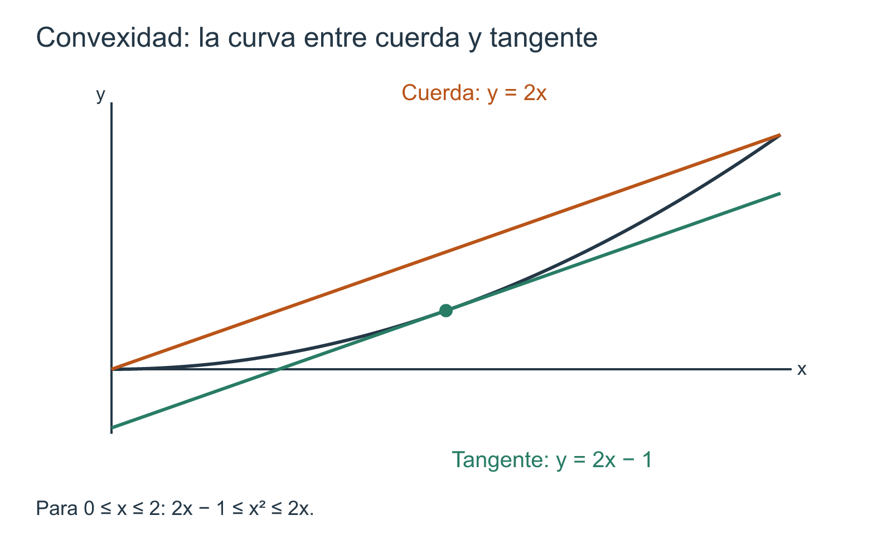

Monotonía, extremos, convexidad y forma de las gráficas
10 Monotonía, extremos, convexidad y forma de las gráficas
← Capítulo 9 · Índice del Tomo I · Capítulo 11 →
El teorema del valor medio nos permitió pasar de un intervalo a un punto: si una función es continua entre dos extremos y diferenciable en su interior, existe un punto donde su derivada coincide con la pendiente de la secante. Pero el resultado también se puede leer en sentido contrario. Si sabemos algo acerca de la derivada en todos los puntos de un intervalo, ¿qué podremos afirmar sobre los valores de la función al recorrerlo?
Esta inversión de la pregunta será el hilo conductor del capítulo. Aprenderemos a demostrar cuándo una función crece o decrece, a reconocer las condiciones que permiten localizar sus extremos y a estudiar la manera en que se inclina su gráfica. La noción de convexidad dará a esas observaciones geométricas una formulación precisa: no dependeremos de que una curva «parezca doblarse hacia arriba» o «hacia abajo», sino de desigualdades que podremos verificar y demostrar.
El objetivo no será acumular recetas para dibujar curvas. Una tabla de signos resulta útil solamente cuando sabemos por qué cada signo autoriza una conclusión y cuándo deja de hacerlo.
10.1 Del incremento medio al sentido del cambio
La información local puede controlar un intervalo
Consideremos una función \(f\) definida y diferenciable en un intervalo abierto \(I\). Elegimos dos puntos cualesquiera \(x,y\in I\) con \(x<y\). La palabra intervalo cumple aquí una función esencial: nos garantiza que el segmento \([x,y]\) está contenido en \(I\). Como la diferenciabilidad implica continuidad, podemos aplicar el teorema del valor medio a la restricción de \(f\) a \([x,y]\).
Existe, por tanto, un punto \(c\in(x,y)\) tal que
\[ \frac{f(y)-f(x)}{y-x}=f'(c). \]
Multiplicando por \(y-x\), que es positivo, obtenemos
\[ f(y)-f(x)=f'(c)(y-x). \]
En el capítulo anterior nos interesaba principalmente la existencia del punto \(c\). Ahora observaremos otra cosa: puesto que \(y-x>0\), el signo del incremento \(f(y)-f(x)\) coincide con el signo de la derivada en ese punto intermedio. Si pudiéramos garantizar que \(f'\) es positiva en todo el intervalo, entonces no importaría cuál fuera el punto que nos entrega el teorema: la diferencia \(f(y)-f(x)\) tendría que ser positiva.
Esta es la idea que vamos a formalizar. Importa que la información acerca de la derivada valga en todo el intervalo, no simplemente en uno o en unos cuantos puntos escogidos. Tampoco necesitamos suponer que \(f'\) sea continua: la aplicación del teorema del valor medio solo utiliza la continuidad de \(f\) en el segmento y su diferenciabilidad en el interior.
Una primera consecuencia, con demostración
Supongamos que \(f'(t)>0\) para todo \(t\in I\). Para cualesquiera \(x<y\) de \(I\), el punto \(c\) obtenido arriba satisface \(f'(c)>0\). Puesto que \(y-x>0\),
\[ f(y)-f(x)=f'(c)(y-x)>0. \]
Por consiguiente,
\[ x<y\quad\Longrightarrow\quad f(x)<f(y). \]
En palabras: al avanzar hacia la derecha dentro del intervalo, los valores de la función aumentan estrictamente. Hemos establecido una conclusión sobre todos los pares \(x<y\), no solamente sobre la inclinación de la gráfica cerca de un punto.
Si sustituimos la hipótesis \(f'(t)>0\) por \(f'(t)\geq 0\), exactamente el mismo razonamiento proporciona \(f(x)\leq f(y)\). La distinción entre aumento estricto y no estricto será importante: una derivada puede anularse sin que por ello la función deje de crecer estrictamente.
El carácter intervalar de \(I\) permitió tomar el segmento \([x,y]\) sin salir del dominio. La diferenciabilidad proporcionó continuidad y permitió aplicar el teorema del valor medio. La positividad de \(f'\) determinó el signo del incremento. Si falta cualquiera de estos elementos, el argumento debe revisarse; una fórmula de derivación, por sí sola, no autoriza la conclusión global.
Dos advertencias antes de convertir esto en una regla
La primera concierne a la conversa. Sería tentador sostener que una función que crece estrictamente debe tener derivada estrictamente positiva en cada punto. Consideremos, sin embargo,
\[ f(x)=x^3. \]
Para comprobar que es estrictamente creciente, tomemos \(x<y\). Entonces
\[ y^3-x^3=(y-x)(x^2+xy+y^2)>0, \]
pues \(y-x>0\) y \(x^2+xy+y^2=\tfrac12[(x+y)^2+x^2+y^2]>0\) cuando \(x<y\). Sin embargo, su derivada es
\[ f'(x)=3x^2,\qquad f'(0)=0. \]
La derivada nula en un punto aislado no ha producido un tramo horizontal. La conclusión correcta para una función creciente y diferenciable será una desigualdad no estricta para la derivada; más adelante demostraremos también esa dirección de la relación.
La segunda advertencia concierne al dominio. Sea
\[ g\colon\mathbb R\setminus\{0\}\longrightarrow\mathbb R, \qquad g(x)=-\frac1x. \]
Su derivada es
\[ g'(x)=\frac1{x^2}>0 \qquad(x\neq 0). \]
Esto nos permite demostrar que \(g\) es estrictamente creciente en cada uno de los intervalos \((-\infty,0)\) y \((0,\infty)\). Pero no en todo su dominio, considerado como un conjunto ordenado: aunque \(-1<1\),
\[ g(-1)=1>-1=g(1). \]
¿Qué falló? No podemos aplicar el teorema del valor medio al segmento \([-1,1]\), porque \(g\) no está definida en \(0\). La desconexión del dominio no se arregla diciendo que «la derivada es positiva en todas partes donde existe»: el puente entre los dos valores atraviesa un punto que falta.
El signo de la derivada informa sobre el sentido del cambio dentro de cada intervalo en el que se cumplen las hipótesis. No debemos combinar intervalos separados ni convertir una condición suficiente en una condición necesaria sin demostrarlo.
Hacia los extremos y la convexidad
Una vez que podamos determinar dónde crece y dónde decrece una función, estaremos preparados para investigar qué sucede al pasar de un comportamiento al otro. No bastará con resolver \(f'(x)=0\): también habrá que examinar los puntos donde la derivada no existe y los extremos del dominio.
Después haremos una pregunta de orden superior. La derivada nos dice cómo cambia la función; ¿qué significa que la propia derivada aumente o disminuya? La respuesta conducirá a la convexidad, pero comenzaremos por una definición geométrica precisa basada en cuerdas, para que los criterios diferenciales sean teoremas y no simples convenciones de dibujo.
Antes de seguir. ¿Qué parte de la demostración dejaría de ser válida si supiéramos que \(f'(c)>0\) para un solo punto \(c\)? ¿Por qué el ejemplo de \(x^3\) impide afirmar que el crecimiento estricto equivale a \(f'>0\) en todas partes?
10.2 Funciones crecientes y decrecientes: definiciones y cuantificadores
En §10.1 dedujimos una desigualdad entre los valores de una función a partir del signo de su derivada. Antes de sistematizar ese procedimiento, debemos precisar qué significa que una función crezca o decrezca, sin mencionar derivadas. Esa propiedad ya apareció en el capítulo 2, al estudiar las funciones inversas (Definición 2.8). Aquí recuperaremos su definición para aprender a utilizarla en argumentos sobre intervalos. No introduciremos una segunda definición incompatible con la primera.
Cuatro propiedades que no deben confundirse
Sean \(D\subseteq\mathbb R\) y \(f\colon D\to\mathbb R\). La definición Definición 2.8 compara cualquier par de puntos distintos del dominio, colocados en orden. Reunamos sus cuatro posibilidades:
| Propiedad de \(f\) en \(D\) | Exigencia para todo \(x,y\in D\) con \(x<y\) |
|---|---|
| No decreciente | \(f(x)\leq f(y)\) |
| Estrictamente creciente | \(f(x)<f(y)\) |
| No creciente | \(f(x)\geq f(y)\) |
| Estrictamente decreciente | \(f(x)>f(y)\) |
En este libro, monótona significa no decreciente o no creciente; cuando sea necesario especificaremos «estrictamente». No emplearemos «creciente» a secas si pudiera confundirse el sentido débil con el estricto.
El cuantificador universal merece una lectura cuidadosa. Por ejemplo, «\(f\) es estrictamente creciente en \(D\)» afirma
\[ \forall x,y\in D,\qquad x<y\Longrightarrow f(x)<f(y). \]
No afirma que exista al menos un par favorable, ni que la desigualdad se cumpla únicamente entre puntos consecutivos de una tabla, ni exige que conozcamos una fórmula para \(f\). La definición habla de todos los pares comparables del dominio.
Para demostrar que \(f\) no es estrictamente creciente basta exhibir \(x,y\in D\) con \(x<y\) y \(f(x)\geq f(y)\). En cambio, para negar que sea no decreciente hace falta un par con \(f(x)>f(y)\). La igualdad entre dos valores distintos refuta el crecimiento estricto, pero no el crecimiento débil. Los cuantificadores determinan exactamente qué contraejemplo debemos buscar.
¿Qué hace la palabra «estrictamente»?
Toda función estrictamente creciente es no decreciente: basta observar que \(f(x)<f(y)\) implica \(f(x)\leq f(y)\). La implicación análoga vale para las funciones decrecientes. Las conversas son falsas, pues una desigualdad no estricta permite que dos entradas diferentes tengan la misma imagen.
Consideremos una función constante \(k\colon\mathbb R\to\mathbb R\), \(k(x)=3\). Para todo \(x<y\),
\[ k(x)=k(y)=3. \]
Por ello, \(k\) es a la vez no decreciente y no creciente, aunque no es estrictamente creciente ni estrictamente decreciente. Esto no es una paradoja: las dos condiciones débiles son compatibles con la igualdad.
De hecho, si una función es simultáneamente no decreciente y no creciente en un conjunto \(D\), entonces es constante allí. Dados \(x,y\in D\), si \(x<y\) las dos condiciones proporcionan \(f(x)\leq f(y)\) y \(f(x)\geq f(y)\); por antisimetría, \(f(x)=f(y)\). Si \(y<x\), intercambiamos los papeles; si \(x=y\), la igualdad es inmediata. Hemos probado una afirmación válida sin continuidad, derivadas ni hipótesis de intervalo.
Hay otra conexión útil con la teoría anterior. Si \(f\) es no decreciente e inyectiva en \(D\), entonces \(x<y\) obliga a \(f(x)\leq f(y)\), mientras que la inyectividad impide \(f(x)=f(y)\); de aquí se sigue \(f(x)<f(y)\). Recíprocamente, toda función estrictamente creciente es inyectiva por Teorema 2.2. Por tanto, no decreciente más inyectiva equivale a estrictamente creciente; de manera simétrica, no creciente más inyectiva equivale a estrictamente decreciente. No debemos sustituir «inyectiva» por «continua»: la continuidad no excluye los tramos constantes.
Si \(D\) contiene cero o un elemento, no existen \(x,y\in D\) con \(x<y\). Las cuatro condiciones de monotonía se satisfacen entonces de manera vacía. En particular, una función sobre un conjunto unitario puede ser estrictamente creciente y estrictamente decreciente a la vez; esa simultaneidad es imposible si el dominio contiene al menos dos puntos. Las afirmaciones sobre cambio efectivo necesitan dos entradas distintas.
Estudiar una restricción no equivale a estudiar toda la función
Sea \(f\colon D\to\mathbb R\) y \(I\subseteq D\). Decir que «\(f\) es no decreciente en \(I\)» significa aplicar la definición a la restricción \(f|_I\). Todas las comparaciones deben tener ambos argumentos en \(I\). Si \(f\) es monótona en \(D\), conserva ese sentido de monotonía en cualquier subconjunto; pero una propiedad demostrada para una restricción no se extiende automáticamente al dominio completo.
La función
\[ p\colon\mathbb R\to\mathbb R,\qquad p(x)=x^2 \]
permite comprobarlo sin cálculo diferencial. Si \(x<y\leq0\), tenemos \(y-x>0\) y \(x+y<0\), por lo que
\[ p(y)-p(x)=(y-x)(x+y)<0. \]
Así, \(p\) es estrictamente decreciente en \((-\infty,0]\). En cambio, para \(0\leq x<y\), ambos factores del mismo producto son positivos y \(p(y)>p(x)\): es estrictamente creciente en \([0,\infty)\). No es monótona en todo \(\mathbb R\). El par \(-1<0\) y la desigualdad \(p(-1)>p(0)\) descartan que sea no decreciente; el par \(0<1\) y \(p(0)<p(1)\) descartan que sea no creciente.
Este ejemplo muestra una forma correcta de comunicar el resultado: debemos nombrar cada intervalo y el sentido de monotonía correspondiente. Decir solamente «\(x^2\) decrece y luego crece» puede servir como orientación, pero no sustituye la identificación de los conjuntos en los que se verifican los cuantificadores.
Componentes separadas: la comparación que suele olvidarse
La definición de monotonía es válida en cualquier subconjunto ordenado \(D\), aunque no sea un intervalo. Lo que exige un intervalo es el razonamiento con el teorema del valor medio utilizado en §10.1: para comparar \(f(x)\) con \(f(y)\) necesitamos que la función esté definida en todo \([x,y]\) y cumpla allí las hipótesis pertinentes.
Volvamos a \(g(x)=-1/x\) sobre \(D=\mathbb R\setminus\{0\}\). En §10.1 verificamos que \(g\) es estrictamente creciente en \((-\infty,0)\) y también en \((0,\infty)\). Sin embargo, si tomamos \(x=-1\) y \(y=1\), obtenemos
\[ x<y,\qquad g(x)=1>-1=g(y). \]
Ese par cruza las dos componentes y refuta que \(g\) sea no decreciente en \(D\). La monotonía en cada componente no es lo mismo que la monotonía en la unión: esta última añade todas las comparaciones entre componentes, que todavía deben comprobarse por otros medios.
Podemos ver que tampoco es correcto inferir que un dominio desconectado impide por sí mismo la monotonía global. La identidad \(h\colon D\to\mathbb R\), \(h(x)=x\), es estrictamente creciente en ese mismo \(D\): la desigualdad \(x<y\) se traduce directamente en \(h(x)<h(y)\), incluso si el intervalo que separa los argumentos contiene puntos excluidos del dominio. La definición no necesita intervalos; el criterio mediante derivadas sí necesita un tramo donde pueda aplicarse el teorema del valor medio.
Lectura de una tabla: evidencia finita y afirmación universal
Supongamos que conocemos tres valores \(f(-1)=2\), \(f(0)=2\) y \(f(1)=5\). Estos datos son compatibles con una función no decreciente y descartan que sea estrictamente creciente en cualquier dominio que contenga \(-1\) y \(0\). Pero no demuestran que sea no decreciente en todo un intervalo: podrían existir dos puntos no observados cuyo orden de imágenes fuera el contrario.
La diferencia entre prueba y exploración puede expresarse como un procedimiento. Para refutar una propiedad universal, basta un par testigo. Para demostrarla hay que tomar puntos arbitrarios \(x<y\) y justificar la desigualdad correspondiente. A veces una identidad algebraica bastará; en la sección siguiente, el teorema del valor medio nos permitirá deducirla de información acerca de la derivada.
Considera \(f\colon[-2,2]\to\mathbb R\), \(f(x)=|x|\). Decide primero, comparando valores, en cuál de los intervalos \([-2,0]\) y \([0,2]\) es estrictamente creciente o decreciente. Para negar la monotonía en todo \([-2,2]\), proporciona dos pares diferentes: uno que refute «no decreciente» y otro que refute «no creciente». Finalmente, explica por qué esos dos testigos no dicen nada, por sí solos, sobre la existencia de derivadas.
Hemos definido la propiedad que deseamos demostrar, distinguido sus cuatro versiones y delimitado cuidadosamente el conjunto de comparación. Ahora sí podemos formular criterios: ¿cuándo un signo conocido de \(f'\) para todos los puntos interiores garantiza una de estas desigualdades para todos los pares del intervalo? Esa será la cuestión de §10.3.
10.3 Criterios de monotonía a partir de la derivada
Las definiciones de §10.2 exigen comparar todos los pares \(x<y\) de un conjunto. Cuando conocemos la derivada, el teorema del valor medio ofrece una vía para demostrar esas desigualdades sin efectuar cada comparación mediante álgebra. Sin embargo, debemos fijar primero el intervalo y verificar que la función se comporte bien también en sus extremos, si los tiene.
Cuatro criterios, una misma demostración
Teorema 10.1 Teorema (criterios de monotonía por el signo de la derivada). Sea \(I\subseteq\mathbb R\) un intervalo que contiene al menos dos puntos. Supongamos que \(f\colon I\to\mathbb R\) es continua en \(I\) (con la continuidad relativa en los extremos que pertenezcan a \(I\)) y diferenciable en el interior \(I^\circ\). Entonces se cumplen las cuatro implicaciones siguientes, siempre que la condición sobre \(f'\) valga para todo \(t\in I^\circ\):
- Si \(f'(t)\geq0\), entonces \(f\) es no decreciente en \(I\).
- Si \(f'(t)>0\), entonces \(f\) es estrictamente creciente en \(I\).
- Si \(f'(t)\leq0\), entonces \(f\) es no creciente en \(I\).
- Si \(f'(t)<0\), entonces \(f\) es estrictamente decreciente en \(I\).
Demostración. Tomemos \(x,y\in I\) arbitrarios con \(x<y\). Puesto que \(I\) es un intervalo, \([x,y]\subseteq I\). La restricción de \(f\) es continua en \([x,y]\) y diferenciable en \((x,y)\); por el teorema del valor medio de Lagrange (Teorema 9.3), existe \(c\in(x,y)\) tal que
\[ f(y)-f(x)=f'(c)(y-x). \]
El factor \(y-x\) es estrictamente positivo. Si \(f'\geq0\) en el interior, el miembro derecho es no negativo y \(f(x)\leq f(y)\): queda probado el primer caso. Si \(f'>0\), el producto es positivo y \(f(x)<f(y)\), lo que demuestra el segundo. Para \(f'\leq0\) obtenemos \(f(y)-f(x)\leq0\) y, para \(f'<0\), obtenemos \(f(y)-f(x)<0\): son los casos tercero y cuarto. Como \(x<y\) fue arbitrario, las conclusiones valen para todos los pares exigidos por la definición. \(\square\)
El teorema no pide que \(f'\) sea continua. No hemos aplicado el teorema del valor medio a la derivada, sino a \(f\); únicamente necesitamos que la derivada exista en cada punto interior y satisfaga allí la desigualdad apropiada. Tampoco exigimos derivadas bilaterales en los extremos de un intervalo cerrado. Lo decisivo es que \(f\) sea continua hasta esos extremos: así podemos elegir uno de ellos como \(x\) o \(y\) sin perder las hipótesis del teorema.
La cadena lógica es: \(x<y\) arbitrarios \(\longrightarrow\) segmento \([x,y]\) contenido en \(I\) \(\longrightarrow\) hipótesis de Lagrange para la restricción \(\longrightarrow\) un punto \(c\) interior \(\longrightarrow\) signo de \(f'(c)(y-x)\) \(\longrightarrow\) desigualdad entre los valores. La condición «para todo \(t\)» nos permite utilizar el signo de la derivada en cualquier punto \(c\) que proporcione el teorema.
Qué dicen exactamente las conversas
Las cuatro condiciones anteriores son suficientes para obtener monotonía. Para averiguar cuáles son también necesarias, no sirve invertir las flechas del enunciado: hay que volver a la definición de derivada.
Proposición 10.1 Proposición (signo necesario para una función monótona). Sea \(I\) un intervalo y sea \(f\colon I\to\mathbb R\). Si \(f\) es no decreciente en \(I\) y es diferenciable en un punto interior \(c\), entonces \(f'(c)\geq0\). Si \(f\) es no creciente y es diferenciable en \(c\), entonces \(f'(c)\leq0\). Las mismas conclusiones no estrictas valen, respectivamente, para funciones estrictamente crecientes y estrictamente decrecientes.
Demostración. Supongamos primero que \(f\) es no decreciente. Como \(c\) es interior, para todo \(h\ne0\) suficientemente pequeño, \(c+h\in I\). Si \(h>0\), tenemos \(f(c+h)\geq f(c)\), y por tanto
\[ \frac{f(c+h)-f(c)}{h}\geq0. \]
Si \(h<0\), la monotonía aplicada al par \(c+h<c\) da \(f(c+h)\leq f(c)\). Ahora numerador y denominador son no positivos, de modo que el mismo cociente vuelve a ser no negativo. Si existe su límite bilateral, no puede ser negativo; por definición, dicho límite es \(f'(c)\geq0\).
Si \(f\) es no creciente, las desigualdades de los valores se invierten y ambos cocientes incrementales son no positivos; su límite, cuando existe, satisface \(f'(c)\leq0\). Finalmente, la monotonía estricta implica la correspondiente monotonía débil (§10.2), por lo que acabamos de demostrar también los dos últimos casos. \(\square\)
Observemos el alcance exacto de la proposición. No exige continuidad de \(f'\) ni que \(f\) sea diferenciable en todo \(I\): produce una conclusión en cada punto interior donde la derivada exista. Si, adicionalmente, \(f\) cumple las hipótesis del teorema anterior, podemos combinar ambas direcciones:
\[ \begin{aligned} f\text{ no decreciente en }I &\iff f'(t)\geq0\quad(t\in I^\circ),\\ f\text{ no creciente en }I &\iff f'(t)\leq0\quad(t\in I^\circ). \end{aligned} \]
Estas equivalencias son para las versiones no estrictas y conservan las hipótesis de continuidad en \(I\) y diferenciabilidad en su interior. En cambio, el crecimiento estricto solo fuerza \(f'\geq0\), no \(f'>0\); el decrecimiento estricto solo fuerza \(f'\leq0\), no \(f'<0\).
El ejemplo \(f(x)=x^3\) de §10.1 ya refuta una de las falsas conversas: crece estrictamente en \(\mathbb R\), pero \(f'(0)=0\). Para obtener el caso simétrico basta considerar \(-x^3\), estrictamente decreciente con derivada nula en \(0\). Un valor cero de la derivada no informa, por sí solo, de la existencia de un tramo constante ni de un extremo.
¿Puede una derivada anularse y mantenerse el crecimiento estricto?
La respuesta es afirmativa, pero debemos precisar cuánto puede anularse. La condición \(f'\geq0\) solo garantiza crecimiento débil; para excluir dos valores iguales necesitamos descartar que la función sea constante entre ellos.
Proposición 10.2 Proposición (criterio exacto para el crecimiento estricto bajo \(f'\geq0\)). Supongamos las hipótesis de Teorema 10.1 y que \(f'(t)\geq0\) para todo \(t\in I^\circ\). Entonces \(f\) es estrictamente creciente en \(I\) si, y solo si, \(f'\) no es idénticamente nula en ningún intervalo abierto no vacío contenido en \(I^\circ\).
La afirmación simétrica vale para el decrecimiento estricto si \(f'\leq0\) y tampoco es idénticamente nula en ningún intervalo abierto no vacío del interior.
Demostración. Por Teorema 10.1, \(f\) es no decreciente. Supongamos que no es estrictamente creciente. Según §10.2, existen \(x<y\) en \(I\) con \(f(x)\geq f(y)\). La monotonía débil proporciona la desigualdad opuesta y, por tanto, \(f(x)=f(y)\). Para cualquier \(z\in[x,y]\), se tiene
\[ f(x)\leq f(z)\leq f(y)=f(x). \]
Así, \(f\) es constante en \([x,y]\), por lo que \(f'(t)=0\) para todo \(t\in(x,y)\). Este intervalo abierto es no vacío y está contenido en \(I^\circ\), contradiciendo la condición anunciada. Luego \(f\) es estrictamente creciente.
Recíprocamente, si \(f'\) fuese idénticamente nula en algún intervalo abierto no vacío \(J\subseteq I^\circ\), la proposición de constancia por derivada nula (Proposición 9.2), aplicada a cada segmento cerrado contenido en \(J\), mostraría que \(f\) toma el mismo valor en dos puntos distintos de \(J\). Eso contradice el crecimiento estricto. El caso decreciente sigue reemplazando \(f\) por \(-f\). \(\square\)
Una condición suficiente particularmente cómoda es que \(f'\geq0\) y sus ceros sean aislados: entonces ningún intervalo abierto puede estar formado enteramente por ceros. Lo mismo ocurre si \(f'\) se anula solo en un conjunto finito. Pero no necesitamos imponer ninguna de esas dos condiciones: lo indispensable para el criterio anterior es que la derivada no se anule en todo un intervalo abierto. Es una afirmación global sobre los intervalos, no una clasificación del comportamiento en un punto aislado.
Ejemplo 10.1 Un polinomio cuyo signo cambia en puntos conocidos. Consideremos
\[ p\colon\mathbb R\to\mathbb R, \qquad p(x)=x^3-3x. \]
Por las reglas de derivación anteriores,
\[ p'(x)=3x^2-3=3(x-1)(x+1). \]
Si \(x<-1\), ambos factores son negativos y su producto es positivo; si \(-1<x<1\), el producto es negativo; si \(x>1\), ambos factores son positivos. Como \(p\) es continua en toda la recta, el criterio se aplica también a los intervalos con los extremos \(-1\) o \(1\) incluidos. Concluimos que \(p\) es estrictamente creciente en \((-\infty,-1]\) y en \([1,\infty)\), y estrictamente decreciente en \([-1,1]\).
Estos tres resultados no permiten declarar que \(p\) sea monótona en su dominio completo. Por ejemplo, \(p(-2)=-2<p(-1)=2\) refuta que sea no creciente, mientras que \(p(-1)=2>p(0)=0\) refuta que sea no decreciente. En §10.4 veremos qué información adicional proporciona el paso de un signo al opuesto para estudiar extremos.
Dos hipótesis que no podemos suprimir
Ejemplo 10.2 Una derivada positiva sin continuidad en el borde. Definamos \(q\colon[0,1]\to\mathbb R\) por
\[ q(0)=2,\qquad q(x)=x\quad(0<x\leq1). \]
Para todo \(t\in(0,1)\) existe \(q'(t)=1>0\). Sin embargo, \(0<\tfrac12\) y \(q(0)=2>\tfrac12=q(\tfrac12)\), de modo que \(q\) ni siquiera es no decreciente en \([0,1]\). El criterio no falla: falta la continuidad de \(q\) en el extremo \(0\), necesaria para aplicar Lagrange a \([0,\tfrac12]\). El signo de una derivada interior no controla por sí solo un valor de borde asignado discontinuamente.
La otra hipótesis es la geometría del dominio. Como comprobamos en §§10.1–10.2, \(g(x)=-1/x\) tiene \(g'(x)>0\) en cada punto de \(\mathbb R\setminus\{0\}\), y es estrictamente creciente por separado a ambos lados de \(0\), pero no es no decreciente en la unión. El teorema no autoriza atravesar el punto excluido. Si el dominio tiene varias componentes, habrá que estudiarlas y después comprobar, mediante la definición, las comparaciones entre ellas antes de afirmar monotonía global.
Primero se fija un intervalo \(I\) donde \(f\) esté definida y sea continua, y se verifica su diferenciabilidad interior. Después se demuestra el signo de \(f'\) en todos los puntos interiores, incluidos los casos que no aparecen en una tabla de muestras. Solo entonces se aplica Teorema 10.1. Los ceros aislados de \(f'\) no obligan a separar artificialmente el intervalo si el signo débil se mantiene; tampoco autorizan por sí solos a proclamar un extremo.
Laboratorio de demostraciones: reparar una conclusión
Considera la siguiente argumentación: «\(f'(a)>0\); por tanto, \(f\) es estrictamente creciente en todo su dominio». El dato se refiere a un solo punto, mientras que el teorema exige un signo en todo el interior de un intervalo y continuidad hasta los extremos incluidos. Para reparar la prueba habría que formular esas hipótesis y precisar en qué intervalo se obtiene la conclusión. Ni siquiera conocer el signo de la derivada en muchos puntos de una tabla equivale a demostrarlo universalmente.
Una segunda argumentación dice: «\(f'(c)=0\); por tanto, \(f\) deja de crecer estrictamente». El ejemplo \(x^3\) muestra que no es válida. La estrategia correcta consiste en examinar el signo de \(f'\) en un intervalo y, si solo conocemos \(f'\geq0\), determinar si puede existir algún intervalo abierto donde \(f'\) se anule idénticamente. No hemos clasificado todavía máximos y mínimos: ese será el asunto de §10.4.
Antes de seguir. ¿Por qué el límite de los cocientes incrementales puede ser cero aunque cada cociente sea positivo? ¿Qué parte del argumento de Teorema 10.1 se rompe si \([x,y]\) sale del dominio? ¿Por qué la continuidad en \(0\) habría impedido el contraejemplo de Ejemplo 10.2?
10.4 Puntos críticos y cambios de signo
En §10.3 demostramos que el signo de la derivada determina el sentido de la monotonía sobre un intervalo. Ahora podemos utilizar esa información para investigar lo que ocurre cerca de un punto donde la función pasa de aumentar a disminuir, o viceversa. El ejemplo \(p(x)=x^3-3x\) ya anticipó dos cambios de comportamiento. La cuestión es justificar cuándo esos cambios producen un máximo o un mínimo local, y distinguir esa conclusión de la simple igualdad \(f'(c)=0\).
El punto donde debemos detenernos a examinar la función
Recordemos que Definición 9.2 define los extremos locales mediante comparaciones con todos los puntos suficientemente próximos del dominio. La definición no exige que exista la derivada. Por otra parte, el teorema de Fermat (Teorema 9.1) establece que, si un extremo local se alcanza en un punto interior donde la función es diferenciable, la derivada vale cero. Esto motiva la siguiente terminología.
Definición 10.1 Punto crítico interior. Sean \(A\subseteq\mathbb R\), \(f\colon A\to\mathbb R\) y \(c\in A^\circ\). Diremos que \(c\) es un punto crítico interior de \(f\) si se cumple al menos una de las condiciones siguientes:
- existe la derivada finita \(f'(c)\) y \(f'(c)=0\);
- la derivada \(f'(c)\) no existe como número real finito.
La condición se refiere a un punto del dominio, no al valor \(f(c)\). En esta convención, los puntos de borde no se llaman críticos interiores: se estudiarán por separado en §10.5.
La segunda posibilidad abarca esquinas y cúspides, pero también admite, por sí sola, puntos de discontinuidad. Por ello, crítico no significa extremo, ni garantiza continuidad. Tampoco significa que la gráfica tenga obligatoriamente una tangente horizontal: esa descripción corresponde solo al primer caso, cuando la derivada es cero.
Proposición 10.3 Proposición (los extremos locales interiores son puntos críticos). Sean \(A\subseteq\mathbb R\), \(f\colon A\to\mathbb R\) y \(c\in A^\circ\). Si \(f\) alcanza en \(c\) un máximo o un mínimo local relativo a \(A\), entonces \(c\) es un punto crítico interior en el sentido de Definición 10.1.
Demostración. Si \(f\) no es diferenciable en \(c\), se cumple la segunda cláusula de la definición. Si existe su derivada finita, Fermat (Teorema 9.1) implica \(f'(c)=0\), y se cumple la primera. Hemos agotado las dos posibilidades. \(\square\)
Esta proposición es una condición necesaria para un extremo interior, no un método que clasifique todos los puntos críticos. Una lista de candidatos puede ser útil para organizar una investigación; verificar que un candidato sea efectivamente un máximo o mínimo exige todavía comparar valores o aplicar un criterio adicional.
El primer criterio: demostrar lo que el cambio de signo permite concluir
Fijemos un punto interior \(c\) y supongamos que podemos mirar la derivada a ambos lados. Para pasar de la monotonía de dos intervalos a una comparación con \(f(c)\), necesitamos que la función sea continua en \(c\): una función podría aumentar a la izquierda, disminuir a la derecha y, sin embargo, tener en el punto central un valor aislado que destruya el supuesto máximo.
Teorema 10.2 Teorema (primer criterio de la derivada para extremos locales). Sean \(A\subseteq\mathbb R\), \(f\colon A\to\mathbb R\) y \(c\in A^\circ\). Supongamos que existe \(r>0\) tal que \((c-r,c+r)\subseteq A\), que \(f\) es continua en \(c\) y que es diferenciable en
\[ (c-r,c)\cup(c,c+r). \]
Si cada signo de la tabla vale en todos los puntos del intervalo lateral indicado, se obtienen las siguientes conclusiones:
| Signo de \(f'\) en \((c-r,c)\) | Signo de \(f'\) en \((c,c+r)\) | Conclusión en \(c\) |
|---|---|---|
| \(+\) | \(-\) | Máximo local estricto. |
| \(-\) | \(+\) | Mínimo local estricto. |
| \(+\) | \(+\) | Ni máximo ni mínimo local. |
| \(-\) | \(-\) | Ni máximo ni mínimo local. |
El teorema no exige que \(f'(c)\) exista, ni que \(f'\) sea continua en los intervalos laterales.
Demostración. Supongamos primero \(f'(t)>0\) a la izquierda y \(f'(t)<0\) a la derecha. Para cualquier \(x\in(c-r,c)\), \(f\) es continua en \([x,c]\): lo es en \(x\) y en todos los puntos anteriores a \(c\) por diferenciabilidad, y lo es en \(c\) por hipótesis. También es diferenciable en \((x,c)\). Por Lagrange (Teorema 9.3), existe \(u\in(x,c)\) tal que
\[ f(c)-f(x)=f'(u)(c-x)>0. \]
Análogamente, para \(y\in(c,c+r)\) existe \(v\in(c,y)\) con
\[ f(y)-f(c)=f'(v)(y-c)<0. \]
Así, \(f(x)<f(c)\) para todo \(x\) situado suficientemente cerca de \(c\) y distinto de él, tanto a la izquierda como a la derecha. Esta es exactamente la definición de máximo local estricto de Definición 9.2.
Si los signos son \(-\) a la izquierda y \(+\) a la derecha, las dos desigualdades se invierten y obtenemos un mínimo local estricto. Si ambos signos son positivos, los mismos argumentos dan, para cualesquiera \(x<c<y\) suficientemente próximos,
\[ f(x)<f(c)<f(y). \]
Los puntos de la izquierda impiden un mínimo local y los de la derecha impiden un máximo local. Cuando ambos signos son negativos, las desigualdades se invierten y tampoco puede haber un extremo local. \(\square\)
La demostración no afirma que la derivada «cambie de signo en \(c\)» como si estuviera obligada a existir en ese punto. Afirma algo más preciso: hay un intervalo perforado a la izquierda y otro a la derecha en los que se conocen, respectivamente, los signos. El punto \(c\) pertenece al dominio y su continuidad une las comparaciones laterales. La información decisiva está en los dos lados y en el valor central.
Aplicar Lagrange a \([x,c]\) y a \([c,y]\) utiliza continuidad en los extremos de ambos segmentos. La diferenciabilidad se exige únicamente en sus interiores: por eso el criterio puede detectar un máximo o mínimo en una esquina donde \(f'(c)\) no exista. Tampoco estamos suponiendo continuidad de \(f'\).
Si solo conocemos signos débiles, hay una variante útil pero de alcance menor: \(f'\geq0\) a la izquierda y \(f'\leq0\) a la derecha garantizan, con las mismas hipótesis, un máximo local no necesariamente estricto; la combinación inversa garantiza un mínimo local no necesariamente estricto. Se repite la prueba reemplazando \(>\) y \(<\) por \(\geq\) y \(\leq\). Para una función constante se satisfacen ambas combinaciones débiles y todos sus puntos son máximos y mínimos locales no estrictos. Por eso no debemos introducir la palabra «estricto» cuando solo hemos demostrado desigualdades débiles.
Volver a un ejemplo conocido: dos extremos, dos comparaciones
Ejemplo 10.3 El polinomio \(x^3-3x\) revisitado. En Ejemplo 10.1 estudiamos
\[ p(x)=x^3-3x,\qquad p'(x)=3(x-1)(x+1). \]
El signo es positivo en \((-\infty,-1)\), negativo en \((-1,1)\) y positivo en \((1,\infty)\). La función es continua y diferenciable en toda la recta, por lo que Teorema 10.2 se aplica en los dos puntos críticos. En \(c=-1\) el signo pasa de \(+\) a \(-\) y \(p(-1)=2\): se alcanza un máximo local estricto. En \(c=1\) pasa de \(-\) a \(+\) y \(p(1)=-2\): se alcanza un mínimo local estricto.
No hemos demostrado que esos valores sean extremos absolutos sobre \(\mathbb R\). De hecho, \(p(x)\) toma valores arbitrariamente grandes o pequeños, pues \(p(x)=x(x^2-3)\) tiene el signo de \(x\) y magnitud no acotada cuando \(|x|\) crece suficientemente. La comparación local y la comparación sobre todo el dominio son problemas diferentes.
En este ejemplo, resolver \(p'(x)=0\) descubrió los dos candidatos \(-1\) y \(1\), pero fue el análisis de los signos a cada lado lo que los clasificó. Resolver una ecuación es una etapa de búsqueda, no la demostración completa.
Puntos críticos sin derivada: ni invisibles ni automáticamente extremos
Ejemplo 10.4 Una esquina que da un mínimo y otra que no da extremo. Para \(u(x)=|x|\) en \(\mathbb R\),
\[ u'(x)=-1\quad(x<0),\qquad u'(x)=1\quad(x>0). \]
La función es continua en \(0\), pero los cocientes incrementales allí son \(|h|/h\), con límites laterales distintos. Así, \(0\) es crítico por no diferenciabilidad, y el cambio de \(-\) a \(+\) prueba que es un mínimo local estricto. Cambiando \(u\) por \(-u\) obtenemos un máximo local estricto, también sin derivada en el origen.
Comparemos este comportamiento con la función continua \(v\colon\mathbb R\to\mathbb R\) dada por
\[ v(x)= \begin{cases} x,&x\leq0,\\ 2x,&x>0. \end{cases} \]
En \(0\) sus derivadas laterales son \(1\) y \(2\), por lo que \(v'(0)\) no existe. Sin embargo, \(v'(x)=1\) a la izquierda y \(v'(x)=2\) a la derecha: los signos son \(+\) y \(+\). El primer criterio muestra que \(0\) no es un extremo local. Ambos ejemplos contienen un punto crítico por no diferenciabilidad; la clasificación cambia cuando cambian las desigualdades laterales.
Derivada cero: tres resultados incompatibles con una clasificación automática
Ejemplo 10.5 El mismo dato puntual, conclusiones diferentes. Consideremos las tres funciones sobre \(\mathbb R\):
\[ a(x)=x^3,\qquad b(x)=x^4,\qquad d(x)=-x^4. \]
Las tres satisfacen
\[ a'(0)=b'(0)=d'(0)=0. \]
Pero \(a'(x)=3x^2>0\) para \(x\neq0\): su signo es \(+\) a ambos lados, y \(0\) no es extremo local. Para \(b\), \(b'(x)=4x^3\) es negativa a la izquierda y positiva a la derecha, de modo que \(0\) es mínimo local estricto. Para \(d\), \(d'(x)=-4x^3\) es positiva a la izquierda y negativa a la derecha, de modo que \(0\) es máximo local estricto. Todos estos resultados también se verifican directamente comparando \(x^3\), \(x^4\) y \(-x^4\) con sus respectivos valores en \(0\).
Por tanto, la afirmación «\(f'(c)=0\) implica un extremo» es falsa; también es falsa la idea de que el valor cero permita distinguir máximo de mínimo.
Dos conversas y una hipótesis que conviene auditar
La proposición Proposición 10.3 dice que todo extremo local interior es crítico. Su conversa es falsa por \(a(x)=x^3\) en Ejemplo 10.5. Tampoco podemos invertir el primer criterio y afirmar que todo máximo local estricto obliga a que la derivada sea positiva en todo un intervalo izquierdo y negativa en todo un intervalo derecho. Un extremo se define mediante valores, y esa desigualdad puede coexistir con oscilaciones de las pendientes.
Ejemplo 10.6 Máximo estricto sin signos laterales uniformes de la derivada. Podemos construirlo sin funciones trigonométricas. Sea \(B(t)=t^3(1-t)^3\) para \(0\le t\le1\), y \(B(t)=0\) fuera de ese intervalo. El polinomio, su primera derivada y su segunda derivada se anulan en los extremos: por tanto, esta función por tramos es dos veces diferenciable en toda la recta. Además, \(0\le B\le1/64\).
Para \(n\ge2\), pongamos \(a_n=2^{-n}\), \(d_n=a_n^3\) e \(I_n=[a_n,a_n+d_n]\). Son intervalos disjuntos, pues \(a_{n+1}+d_{n+1}<a_n\), y se acumulan solamente en cero. Definamos
\[ p(x)=\begin{cases} \dfrac{a_n^2}{10}B\!\left(\dfrac{x-a_n}{d_n}\right),&x\in I_n,\\ 0,&x\notin\bigcup_{n\ge2}I_n, \end{cases} \qquad w(x)=-x^2+p(x). \]
En cada intervalo \(I_n\), \(x\ge a_n\) y \(0\le p(x)\le a_n^2/640\le x^2/640\). Fuera de ellos, \(p=0\). Así \(w(x)<0=w(0)\) para todo \(x\ne0\): el origen es un máximo estricto. La misma cota da \(|p(x)/x|\le |x|/640\to0\), de modo que \(w'(0)=0\). En los extremos de cada intervalo, \(p\) y \(p'\) empalman con cero; en cualquier punto no nulo solo intervienen finitos intervalos localmente. Por ello \(w\) es diferenciable en toda la recta.
En los puntos \(r_n=a_n+d_n/4\) y \(s_n=a_n+3d_n/4\), usamos \(B'(1/4)=27/512\) y \(B'(3/4)=-27/512\):
\[ w'(r_n)=-2r_n+\frac{27}{5120a_n}>0 \quad\text{para }n\text{ grande},\qquad w'(s_n)=-2s_n-\frac{27}{5120a_n}<0. \]
Ambas sucesiones tienden a cero por la derecha. No hay ningún intervalo derecho completo en el que \(w'<0\), aunque el máximo sea estricto. La condición de signos del primer criterio es suficiente, pero no necesaria.
Ejemplo 10.7 Los signos correctos no compensan una discontinuidad central. Definamos \(z\colon\mathbb R\to\mathbb R\) por
\[ z(0)=-2,\qquad z(x)=-|x|\quad(x\neq0). \]
Para todo \(x<0\), \(z'(x)=1>0\); para todo \(x>0\), \(z'(x)=-1<0\). Los signos parecen los de un máximo, pero \(z\) no es continua en \(0\), ya que \(\lim_{x\to0}z(x)=0\neq z(0)\). Para \(0<|x|<1\) tenemos \(z(x)=-|x|>-1>-2=z(0)\): en realidad, \(0\) es un mínimo local estricto, no un máximo. Falta exactamente la continuidad en \(c\) exigida por Teorema 10.2.
El último contraejemplo no desmiente el teorema: muestra por qué no debe omitirse una de sus hipótesis. Tampoco la ausencia de derivada en un punto autoriza a declarar un extremo. Para resolver un problema hay que separar identificación de candidatos, verificación de hipótesis y clasificación por comparaciones.
Primero determina el dominio y comprueba que el punto estudiado sea interior. Identifica dónde se anula la derivada y dónde no existe, sin desechar estos últimos puntos. Después, si vas a utilizar el primer criterio, verifica continuidad en el punto, diferenciabilidad a ambos lados y un signo válido en cada intervalo lateral completo. Si esas condiciones no se conocen, vuelve a la definición de extremo local: compara directamente \(f(x)\) con \(f(c)\) para todos los puntos próximos permitidos. Los extremos de borde requieren un examen separado.
Laboratorio: una prueba, tres diagnósticos
Considera la frase: «\(f'(c)=0\); entonces \(f\) tiene un extremo en \(c\)». Indica si el fallo está en el cálculo, en la implicación lógica o en el dominio, y utiliza Ejemplo 10.5 para refutarla. Considera después: «\(f'\) es positiva antes de \(c\) y negativa después de \(c\); luego hay un máximo». Señala qué significa antes y después en términos de intervalos, qué hipótesis sobre \(f(c)\) falta y cómo Ejemplo 10.7 muestra que no es opcional. Por último, para la función \(v\) de Ejemplo 10.4, comprueba la no existencia de la derivada en \(0\) mediante dos cocientes laterales y demuestra directamente, con puntos a ambos lados, que no hay extremo.
Antes de seguir. ¿Por qué el teorema se aplica a \(|x|\) aunque su derivada no exista en el origen? ¿Qué diferencia lógica separa «todo extremo interior es crítico» de «todo punto crítico es extremo»? ¿En qué momento del estudio de un intervalo cerrado debemos añadir sus puntos de borde a la lista de candidatos? Esta última pregunta nos llevará a §10.5.
10.5 Extremos absolutos y extremos del dominio
En §10.4 aprendimos a clasificar ciertos extremos locales mediante signos de la derivada. Un máximo local, sin embargo, solo exige comparaciones con puntos próximos: no hay razón para que sea el mayor valor de la función sobre todo su dominio. Volvemos ahora a la definición de máximo y mínimo absolutos (Definición 9.1) y distinguiremos dos preguntas que conviene resolver en orden: ¿existe un valor extremo? y, si existe, ¿en qué puntos puede alcanzarse?
Primero la existencia; después la localización
Sea \(f\colon[a,b]\to\mathbb R\) continua, con \(a<b\). El teorema de los valores extremos (Teorema 5.5) afirma que existen \(x_m,x_M\in[a,b]\) tales que
\[ f(x_m)\leq f(x)\leq f(x_M) \qquad\text{para todo }x\in[a,b]. \]
Por tanto, los valores mínimo y máximo existen y se alcanzan. El teorema, por sí solo, no identifica los puntos \(x_m,x_M\) ni afirma que sean únicos. Para localizarlos aprovecharemos la distinción entre puntos interiores y extremos del intervalo: un punto de máximo absoluto interior también es de máximo local, mientras que \(a\) y \(b\) no tienen por qué satisfacer la conclusión bilateral de Fermat.
Proposición 10.4 Proposición (candidatos necesarios para los extremos absolutos en un intervalo cerrado). Sean \(a<b\) y \(f\colon[a,b]\to\mathbb R\) continua. Definamos
\[ C_f=\{a,b\}\cup \{c\in(a,b):f'(c)=0\ \text{o }f'(c) \text{ no existe como número real finito}\}. \]
Si \(f\) alcanza un máximo o un mínimo absoluto en \(c\in[a,b]\), entonces \(c\in C_f\). En particular, existen \(u,v\in C_f\) tales que
\[ f(u)\leq f(x)\leq f(v) \qquad\text{para todo }x\in[a,b]. \]
Cuando \(f\) es diferenciable en todo \((a,b)\), la segunda parte de la unión se reduce a los ceros de \(f'\).
Demostración. Por Teorema 5.5 existen \(u,v\in[a,b]\) en los que \(f\) alcanza sus valores mínimo y máximo absolutos, respectivamente. Consideremos cualquiera de esos puntos, al que llamaremos \(c\). Si \(c=a\) o \(c=b\), pertenece a \(C_f\) por definición. Si \(a<c<b\), el extremo absoluto es también local relativo a \([a,b]\) por Definición 9.2. La proposición Proposición 10.3 demuestra entonces que \(c\) es crítico interior: su derivada finita es cero o no existe. En ambos casos \(c\in C_f\). Aplicado por separado a \(u\) y \(v\), esto prueba las dos afirmaciones. \(\square\)
La proposición dice que los puntos donde se alcanzan los extremos están dentro de \(C_f\); no dice que todos los puntos de \(C_f\) sean extremos. El ejemplo \(x^3\) en Ejemplo 10.5 ya mostró un cero de la derivada que ni siquiera produce un extremo local. Tampoco dice que el conjunto de candidatos sea finito. El hecho de que \(u,v\in C_f\) existan proviene de la continuidad sobre el intervalo cerrado; resolver \(f'=0\) no sustituye esa garantía.
Existencia: continuidad de \(f\) en \([a,b]\) \(\longrightarrow\) Weierstrass. Localización necesaria: cualquier punto de extremo absoluto es un borde o un punto crítico interior \(\longrightarrow\) Fermat y su extensión a puntos no diferenciables. Determinación: comparar los valores pertinentes o demostrar desigualdades globales. El segundo paso no demuestra el primero ni convierte cada candidato en una solución.
Una lista finita: comparar valores, no etiquetas
Si \(C_f\) es finito y podemos determinarlo completamente, la proposición reduce la búsqueda a una comparación finita. Para cada \(c\in C_f\) calculamos \(f(c)\); el menor de esos números es el mínimo absoluto y el mayor es el máximo absoluto. La justificación no es que un valor en la lista «parezca más extremo»: ya sabemos que algún punto de mínimo y algún punto de máximo aparecen en ella. Al comparar los valores también debemos conservar todos los argumentos que produzcan el mismo valor extremo.
Ejemplo 10.8 Los extremos locales no tienen por qué superar a los bordes. Restrinjamos a \([-2,2]\) el polinomio estudiado en Ejemplo 10.3:
\[ p(x)=x^3-3x, \qquad p'(x)=3(x-1)(x+1). \]
Es continuo en el intervalo cerrado y sus únicos puntos críticos interiores son \(-1\) y \(1\). El conjunto de candidatos es, por tanto, \(C_p=\{-2,-1,1,2\}\). La evaluación exacta da
| Punto candidato \(c\) | \(-2\) | \(-1\) | \(1\) | \(2\) |
|---|---|---|---|---|
| \(p(c)\) | \(-2\) | \(2\) | \(-2\) | \(2\) |
Concluimos que el máximo absoluto vale \(2\) y se alcanza en dos puntos, \(-1\) y \(2\); el mínimo absoluto vale \(-2\) y se alcanza en \(-2\) y \(1\). Un extremo interior y un extremo de borde pueden compartir el mismo valor absoluto. La clasificación local de §10.4, por sí sola, no habría revelado los empates con los bordes.
No hemos calculado derivadas en \(-2\) ni en \(2\) para incluirlos en \(C_p\). Lo que importa es su pertenencia al dominio: un extremo absoluto puede alcanzarse en cualquiera de ellos. Si \(a=b\), caso excluido del enunciado de la proposición para evitar una distinción artificial entre interior y bordes, la función tiene simultáneamente máximo y mínimo absolutos en su único argumento.
Los puntos no diferenciables también pueden decidir el resultado
Ejemplo 10.9 Una esquina interior y un máximo en el borde. Consideremos \(q\colon[0,3]\to\mathbb R\) definida por \(q(x)=|x-1|\). La continuidad sobre \([0,3]\) asegura la existencia de ambos extremos. En \((0,1)\) su derivada es \(-1\); en \((1,3)\) es \(1\); en \(1\) no existe derivada bilateral. No hay ceros de la derivada en los demás puntos interiores. Por tanto,
\[ C_q=\{0,1,3\},\qquad q(0)=1,\quad q(1)=0,\quad q(3)=2. \]
El mínimo absoluto es \(0\) y se alcanza en \(1\), donde la derivada no existe. El máximo absoluto es \(2\) y se alcanza en el extremo derecho \(3\). Si hubiésemos buscado exclusivamente soluciones de \(q'(x)=0\), no habríamos encontrado ninguno de los dos extremos.
Nuestra definición Definición 10.1 exige \(c\in A^\circ\). Los extremos \(a\) y \(b\) de un intervalo cerrado se incorporan como candidatos por separado, aunque existan derivadas laterales y sean distintas de cero. La lista correcta no es «resolver \(f'=0\) y terminar», ni «llamar críticos a todos los puntos donde falta una derivada bilateral».
Qué ocurre si no tenemos las hipótesis de existencia
El teorema Teorema 5.5 es una garantía para funciones continuas en el intervalo cerrado completo. No podemos citarlo en un intervalo abierto, en un conjunto no acotado ni para una función discontinua sin comprobar otras propiedades. Tampoco debemos confundir «el teorema no es aplicable» con «los extremos no existen»: cada caso requiere una comprobación independiente.
Ejemplo 10.10 Tres maneras de perder una conclusión automática.
Un borde ausente. Para \(f(x)=x\) en \((0,1)\) tenemos \(0<f(x)<1\). El ínfimo de la imagen es \(0\) y el supremo es \(1\), pero ninguno se alcanza: no hay mínimo ni máximo absolutos. Los números \(0\) y \(1\) no son argumentos de la función.
Un dominio no acotado. El polinomio \(p(x)=x^3-3x\) en \(\mathbb R\) tiene los extremos locales descritos en Ejemplo 10.3, pero no tiene máximo ni mínimo absolutos. En efecto, para \(x\ge2\) se cumple \(p(x)=x(x^2-3)\ge x\), de modo que sus valores crecen sin cota superior; para \(x\le-2\), la misma identidad y \(x^2-3\ge1\) dan \(p(x)\le x\), y no existe cota inferior. Los extremos locales no resuelven la pregunta global.
Un borde presente sin continuidad. Sea \(h\colon[0,1]\to\mathbb R\) dada por \(h(x)=x\) si \(0\le x<1\) y \(h(1)=0\). Su dominio es cerrado y acotado, pero \(h\) es discontinua en \(1\). Tiene mínimo absoluto \(0\), alcanzado en \(0\) y \(1\), y no tiene máximo: si \(x\in[0,1)\), el punto \(y=(x+1)/2\in(x,1)\) satisface \(h(y)>h(x)\), mientras que para \(x=1\) basta elegir \(y=1/2\). Por tanto, ningún argumento maximiza \(h\), aunque \(\sup h([0,1])=1\).
Una función sobre un intervalo abierto puede, sin embargo, tener extremos: \(x^2\) sobre \((-1,1)\) alcanza un mínimo absoluto en \(0\), aunque no alcanza máximo. Una función discontinua en un compacto también puede alcanzar los dos extremos. Los ejemplos anteriores no convierten las hipótesis de Weierstrass en condiciones necesarias para cada función particular; delimitan el alcance de su garantía universal.
¿Y si hay infinitos candidatos?
Ejemplo 10.11 Una meseta y un conjunto infinito de ceros. Definamos \(r\colon[0,2]\to\mathbb R\) por
\[ r(x)= \begin{cases} 0,&0\le x\le1,\\ (x-1)^2,&1<x\le2. \end{cases} \]
Las dos expresiones concuerdan en \(1\), así que \(r\) es continua en todo el intervalo. En \((0,1)\) su derivada vale \(0\); para \(x\in(1,2)\) vale \(2(x-1)>0\). En \(x=1\) existe la derivada y vale \(0\), pues el cociente incremental es \(0\) a la izquierda e igual a \(h\) a la derecha. Así,
\[ C_r=[0,1]\cup\{2\}. \]
No existe una lista finita de todos los candidatos: cada punto de \((0,1)\) tiene derivada nula. Aun así, la comparación global es sencilla, porque \(r(x)\ge0\) para todo \(x\in[0,2]\), con igualdad exactamente si \(x\in[0,1]\), y \(r(x)\le1=r(2)\). El mínimo absoluto es \(0\), alcanzado en todos los puntos de \([0,1]\); el máximo absoluto es \(1\), alcanzado solo en \(2\).
Este caso enseña qué hacer cuando la ecuación de puntos críticos produce una familia infinita: describirla como conjunto, estudiar el comportamiento por intervalos y comparar rangos de valores. No hay ningún teorema que obligue a reducir los candidatos a una enumeración finita; tampoco podemos elegir unos cuantos valores muestrales y anunciar que representan a todos los demás.
Un protocolo completo para un intervalo cerrado
Dada una función concreta \(f\colon[a,b]\to\mathbb R\), el procedimiento no consiste en aplicar mecánicamente una tabla, sino en justificar una cadena de afirmaciones:
- Dominio y existencia. Comprobar \(a<b\), que la función está definida en todo \([a,b]\) y es continua allí. Si esto falla, investigar existencia o no existencia por otros argumentos, sin atribuir a Weierstrass una conclusión que no garantiza.
- Candidatos. Incluir \(a\) y \(b\); determinar los ceros de \(f'\) y los puntos interiores donde la derivada no existe. En particular, no perder esquinas ni puntos excepcionales de una definición por tramos.
- Suficiencia de la búsqueda. Invocar Proposición 10.4 para probar que todos los puntos de extremo absoluto pertenecen al conjunto obtenido. Si no se ha caracterizado por completo ese conjunto, la búsqueda sigue incompleta.
- Comparación global. Si la lista es finita, calcular todos sus valores y compararlos. Si es infinita, usar monotonía, desigualdades u otra información demostrada para comparar todos los candidatos. Registrar posibles empates y distinguir argumentos de valores.
- Conclusión tipada. Indicar el valor máximo y mínimo, los puntos en que se alcanzan y el dominio al que se refiere la afirmación. No sustituir «absoluto» por «local» ni extrapolar el resultado a un dominio mayor.
Weierstrass asegura la existencia; Fermat controla solo los extremos interiores diferenciables. Los puntos interiores no diferenciables y los extremos \(a,b\) completan el conjunto de candidatos necesarios. El criterio de signos de §10.4 puede ayudar a clasificar algunos de ellos localmente, pero la palabra absoluto exige una comparación sobre todo \([a,b]\).
Laboratorio: corregir tres pruebas incompletas
Una solución afirma: «La derivada de \(p\) se anula únicamente en \(-1\) y \(1\); por eso sus valores son los extremos absolutos en \([-2,2]\)». Señala exactamente qué candidatos faltan y usa Ejemplo 10.8 para reconstruir la comparación completa. Otra solución examina \(q'(x)\) en \((0,3)\), comprueba que nunca vale cero y concluye que \(q\) no tiene extremos: localiza la hipótesis falsa escondida en ese razonamiento y repara la búsqueda mediante Ejemplo 10.9. Finalmente, una tercera solución escribe «\(f\) está acotada, luego alcanza su supremo» para la identidad en \((0,1)\): distingue el dato correcto de la conclusión falsa y proporciona el argumento preciso de no consecución.
Antes de seguir. ¿En qué línea del razonamiento se garantiza la existencia del punto de máximo? ¿Por qué la proposición de candidatos es necesaria, pero no clasifica individualmente cada candidato? ¿Cómo modificarías el procedimiento si el dominio fuese una unión de intervalos disjuntos? El paso a la convexidad en §10.6 no eliminará estas obligaciones: también allí comenzaremos por fijar el dominio y las desigualdades que queremos demostrar.
10.6 Convexidad como propiedad de las cuerdas
Hasta aquí hemos comparado valores de una función para averiguar si crece o decrece, o para localizar sus extremos. Ahora compararemos algo distinto: el valor de la función entre dos puntos con el valor que tendría allí la recta que une los puntos correspondientes de su gráfica. Esa comparación permitirá definir la convexidad sin mencionar derivadas. Los criterios mediante pendientes y derivadas vendrán después, como consecuencias que habrá que demostrar.

De dos puntos a una cuerda
Sea \(I\subseteq\mathbb R\) un intervalo y sean \(x,y\in I\). Para \(0\leq t\leq1\), el número
\[ z=(1-t)x+ty=x+t(y-x) \]
está entre \(x\) e \(y\) y, por ser \(I\) un intervalo, también pertenece a \(I\). Los coeficientes \(1-t\) y \(t\) son no negativos y suman \(1\): decimos que \(z\) es una combinación convexa de \(x\) e \(y\). Cuando \(t=0\) recuperamos \(x\); cuando \(t=1\), recuperamos \(y\); para \(0<t<1\) y \(x\neq y\), obtenemos un punto estrictamente intermedio.
Los puntos de la gráfica situados sobre los extremos son \((x,f(x))\) e \((y,f(y))\). El segmento rectilíneo que los une contiene, a la altura de la abscisa \(z\), el punto
\[ \bigl((1-t)x+ty,\,(1-t)f(x)+tf(y)\bigr). \]
La pregunta geométrica tiene, por tanto, una formulación algebraica: ¿está el punto \((z,f(z))\) a la misma altura, por debajo o por encima de esa cuerda? La respuesta se expresará mediante una desigualdad válida para todos los extremos y todas las proporciones permitidas, no mediante la apariencia de un dibujo particular.
Definición 10.2 Definición (convexidad, convexidad estricta y concavidad). Sea \(I\subseteq\mathbb R\) un intervalo y \(f\colon I\to\mathbb R\).
Diremos que \(f\) es convexa en \(I\) si, para todo \(x,y\in I\) y todo \(t\in[0,1]\), se cumple
\[ f((1-t)x+ty)\leq(1-t)f(x)+tf(y). \]
Diremos que \(f\) es estrictamente convexa en \(I\) si la desigualdad es estricta siempre que \(x\neq y\) y \(0<t<1\).
La función \(f\) es cóncava en \(I\) si la desigualdad de convexidad se invierte para todos esos \(x,y,t\); es estrictamente cóncava si la desigualdad inversa es estricta cuando \(x\neq y\) y \(0<t<1\).
Geométricamente, una función convexa tiene su gráfica a la altura de las cuerdas o por debajo de ellas; para una función cóncava, a la altura o por encima. La expresión «por debajo» incluye la igualdad: una recta puede coincidir enteramente con su cuerda. La convexidad estricta excluye esa igualdad en los puntos estrictamente intermedios de dos abscisas distintas.
Hay tres detalles lógicos que conviene separar. Primero, las condiciones \(t=0\) y \(t=1\) dan igualdad automáticamente, sea cual sea la función: nunca deben exigirse desigualdades estrictas allí. Segundo, si \(x=y\), ambos miembros coinciden para cualquier \(t\). Tercero, la definición no presupone que \(f\) sea diferenciable ni siquiera continua en los extremos de \(I\); esas propiedades no deben introducirse en secreto como parte de la palabra «convexa».
Una sola cuerda bien situada no demuestra convexidad, porque la definición exige todas las parejas \(x,y\) y todos los \(t\in[0,1]\). En cambio, un único triple admisible \((x,y,t)\) que viole la desigualdad basta para refutarla. Tampoco alcanza con verificar algunos puntos medios de una tabla: la definición se refiere a cualquier proporción intermedia.
Dos formas equivalentes de escribir la misma propiedad
Cuando \(x<y\) y elegimos \(z\in[x,y]\), existe un único parámetro
\[ t=\frac{z-x}{y-x}\in[0,1]. \]
Al sustituirlo en la combinación convexa, los coeficientes adquieren una forma simétrica:
\[ 1-t=\frac{y-z}{y-x},\qquad t=\frac{z-x}{y-x}. \]
La ecuación de la cuerda entre las abscisas \(x\) e \(y\) puede escribirse, para \(z\in[x,y]\), como
\[ \ell_{x,y}(z) =\frac{y-z}{y-x}f(x) +\frac{z-x}{y-x}f(y). \]
Proposición 10.5 Proposición (criterio equivalente de las cuerdas). Sea \(I\) un intervalo y \(f\colon I\to\mathbb R\). La función \(f\) es convexa en \(I\) si, y solo si, para cualesquiera \(x<y\) de \(I\) y cualquier \(z\in[x,y]\), se cumple
\[ f(z)\leq\ell_{x,y}(z). \]
La equivalencia también vale para la convexidad estricta si se exige \(x<z<y\) y se reemplaza \(\leq\) por \(<\); para concavidad y concavidad estricta se invierten las desigualdades correspondientes.
Demostración. Supongamos primero que \(f\) es convexa. Dados \(x<y\) y \(z\in[x,y]\), tomemos \(t=(z-x)/(y-x)\). Entonces \(z=(1-t)x+ty\), y la desigualdad de la definición da exactamente \(f(z)\leq\ell_{x,y}(z)\).
Recíprocamente, supongamos que se cumple la desigualdad con las cuerdas. Dados \(x,y\in I\) y \(t\in[0,1]\), si \(x=y\) obtenemos igualdad y no hay nada que probar. Si \(x<y\), aplicamos la hipótesis a \(z=(1-t)x+ty\). Si \(y<x\), intercambiamos los nombres de los extremos y reemplazamos \(t\) por \(1-t\); la combinación convexa y su valor interpolado no cambian. Así se obtiene la desigualdad de la definición en todos los casos. Para las versiones estrictas, \(x\neq y\) y \(0<t<1\) equivalen a que \(z\) quede estrictamente entre las dos abscisas; el mismo argumento conserva las desigualdades estrictas. Las versiones cóncavas se demuestran invirtiendo los signos. \(\square\)
El denominador \(y-x\) explica por qué en esta formulación exigimos \(x<y\): no se puede escribir la ecuación de una cuerda mediante ese cociente cuando las abscisas coinciden. La definición mediante combinaciones convexas, en cambio, contempla sin dificultad el caso \(x=y\).
Los ejemplos deben probarse, no adivinarse
Ejemplo 10.12 Una función afín coincide con todas sus cuerdas. Sea \(f(x)=mx+b\) en un intervalo \(I\), con \(m,b\in\mathbb R\). Para todo \(x,y\in I\) y \(t\in[0,1]\),
\[ \begin{aligned} f((1-t)x+ty) &=m((1-t)x+ty)+b\\ &=(1-t)(mx+b)+t(my+b)\\ &=(1-t)f(x)+tf(y). \end{aligned} \]
Por tanto, toda función afín es simultáneamente convexa y cóncava. Si \(I\) contiene al menos dos puntos, no es estrictamente convexa ni estrictamente cóncava: para dos abscisas distintas y \(t=1/2\) obtenemos igualdad donde se requeriría una desigualdad estricta. El signo de \(m\) no interviene; una función puede ser decreciente y convexa a la vez.
Ejemplo 10.13 El cuadrado: una desigualdad estricta sin derivadas. Consideremos \(q(x)=x^2\) en \(\mathbb R\). La identidad algebraica
\[ (1-t)x^2+ty^2-((1-t)x+ty)^2 =t(1-t)(x-y)^2 \]
muestra que la diferencia entre la altura de la cuerda y la altura de la gráfica es no negativa para \(t\in[0,1]\). Si \(x\neq y\) y \(0<t<1\), los tres factores del miembro derecho son positivos. En consecuencia, \(q\) es estrictamente convexa sobre toda la recta. La función \(-q\) es estrictamente cóncava porque multiplica por \(-1\) la desigualdad recién demostrada.
La prueba revela algo que una figura no muestra por sí sola: sabemos cuánto separa la cuerda de la gráfica, y sabemos exactamente cuándo esa separación es cero. No hemos utilizado el valor de \(q'\) ni de \(q''\).
Ejemplo 10.14 El valor absoluto: convexidad sin diferenciabilidad y sin carácter estricto. Para \(f(x)=|x|\), la desigualdad triangular y la homogeneidad del valor absoluto proporcionan
\[ \begin{aligned} |(1-t)x+ty| &\leq |(1-t)x|+|ty|\\ &=(1-t)|x|+t|y|, \end{aligned} \]
pues \(t\) y \(1-t\) son no negativos. Por lo tanto, \(|x|\) es convexa en \(\mathbb R\), aunque no sea diferenciable en \(0\), como vimos en Ejemplo 10.4. No es estrictamente convexa: para \(x=1\), \(y=2\) y \(0<t<1\), todos los números implicados son positivos y se obtiene igualdad,
\[ |(1-t)\cdot1+t\cdot2| =(1-t)|1|+t|2|. \]
En cambio, para \(x=-1\), \(y=1\) y \(t=1/2\) la desigualdad sí es estricta: \(0<1\). Una cuerda estrictamente por encima de la gráfica no basta para afirmar convexidad estricta; esa propiedad exige todas las cuerdas con extremos distintos.
Ejemplo 10.15 Una función que no es ni convexa ni cóncava en toda la recta. Retomemos \(p(x)=x^3\). Para \(x=-2\), \(y=0\) y \(t=1/2\), el punto medio es \(-1\) y
\[ p(-1)=-1>-4=\frac{p(-2)+p(0)}2. \]
Esto refuta la desigualdad de convexidad. Por otra parte, con \(x=0\), \(y=2\) y \(t=1/2\) obtenemos
\[ p(1)=1<4=\frac{p(0)+p(2)}2, \]
lo que refuta la desigualdad de concavidad. Así, \(x^3\) no es convexa ni cóncava en \(\mathbb R\). No concluimos de ello que sus restricciones a otros intervalos tengan necesariamente el mismo comportamiento: como ocurría con la monotonía, toda afirmación debe indicar el dominio sobre el cual se comparan los puntos.
Convexidad, concavidad y las funciones afines
La definición cóncava no constituye una teoría desconectada de la convexa. Si \(g=-f\), la desigualdad
\[ f((1-t)x+ty)\geq(1-t)f(x)+tf(y) \]
es equivalente, tras multiplicar ambos lados por \(-1\) e invertir el signo, a la desigualdad de convexidad para \(g\). En particular, \(f\) es cóncava si, y solo si, \(-f\) es convexa; la misma equivalencia funciona para las versiones estrictas.
Proposición 10.6 Proposición (convexidad y concavidad simultáneas). Si \(I\) es un intervalo con al menos dos puntos, una función \(f\colon I\to\mathbb R\) es convexa y cóncava a la vez si, y solo si, es afín en \(I\): existen \(m,b\in\mathbb R\) tales que \(f(x)=mx+b\) para todo \(x\in I\).
Demostración. Si \(f\) es afín, Ejemplo 10.12 verifica ambas desigualdades con igualdad. Para probar la conversa, supongamos que \(f\) es convexa y cóncava. Las desigualdades opuestas fuerzan
\[ f((1-t)x+ty)=(1-t)f(x)+tf(y) \]
para todos \(x,y\in I\) y \(t\in[0,1]\). Escogemos \(a<b\) en \(I\) y llamamos \(L\) a la única función afín que coincide con \(f\) en \(a\) y \(b\):
\[ L(z)=f(a)+\frac{f(b)-f(a)}{b-a}(z-a). \]
Si \(a\leq z\leq b\), la igualdad anterior aplicada a los extremos \(a,b\) da \(f(z)=L(z)\). Si \(z>b\) y \(z\in I\), el punto \(b\) es una combinación convexa estrictamente intermedia de \(a\) y \(z\). Aplicando la igualdad a \(f\) y a \(L\) con los mismos coeficientes y usando \(f(a)=L(a)\), \(f(b)=L(b)\), obtenemos \(f(z)=L(z)\) porque el coeficiente de \(f(z)\) es positivo. Si \(z<a\), repetimos el argumento expresando \(a\) como combinación convexa de \(z\) y \(b\); ahora el coeficiente de \(f(z)\) vuelve a ser positivo. Por tanto, \(f=L\) en todo \(I\). \(\square\)
La desigualdad débil admite segmentos rectos e incluso funciones enteramente afines; la estricta prohíbe igualdad en cualquier punto interior de cualquier cuerda con abscisas distintas. Las dos propiedades no deben intercambiarse. Tampoco debe confundirse convexidad con monotonía: \(x^2\) es estrictamente convexa en \(\mathbb R\), pero decrece en \((-\infty,0]\) y crece en \([0,\infty)\), como se comprobó en §10.2.
El dominio y los extremos también cuentan
Si una función es convexa en \(I\), su restricción a cualquier subintervalo \(J\subseteq I\) sigue siendo convexa: cada triple admisible para \(J\) también lo era para \(I\). La misma observación vale para convexidad estricta y para las dos formas de concavidad. La conversa no se obtiene automáticamente al reunir intervalos: faltan todas las cuerdas con extremos situados en piezas diferentes.
En esta exposición exigimos que el dominio de convexidad sea un intervalo. Si el dominio original es una unión disjunta de intervalos, podremos estudiar sus restricciones por separado, pero no proclamaremos convexidad en la unión utilizando nuestra definición, que requiere que las combinaciones convexas de los extremos permanezcan en el dominio. La identidad \(x\) sobre \(\mathbb R\setminus\{0\}\) puede satisfacer igualdades de interpolación siempre que los tres puntos estén definidos; sin embargo, el segmento entre \(-1\) y \(1\) no pertenece al dominio. No confundiremos esa propiedad parcial con convexidad sobre un intervalo.
Hay además una advertencia acerca de los extremos incluidos. Definamos \(h\colon[0,1]\to\mathbb R\) por
\[ h(x)= \begin{cases} 1,&x=0\text{ o }x=1,\\ 0,&0<x<1. \end{cases} \]
Esta función es convexa. En efecto, si \(z=(1-t)x+ty\) está en \((0,1)\), entonces \(h(z)=0\) y el miembro derecho de la desigualdad es una combinación de números no negativos. Si \(z\) es uno de los extremos, la combinación solo puede producirlo con los puntos implicados situados en ese mismo extremo o con un coeficiente igual a \(0\) o \(1\); en cualquiera de esos casos hay igualdad. No obstante, \(h\) es discontinua en \(0\) y en \(1\). La convexidad en un intervalo cerrado no implica, por sí sola, continuidad en los extremos. Los resultados diferenciales de las secciones siguientes indicarán explícitamente sus hipótesis adicionales; no las deduciremos de un dibujo.
Laboratorio: tres diagnósticos antes de derivar
Una persona observa que el punto medio de una cuerda de \(f\) queda bajo la cuerda y escribe: «\(f\) es convexa». Explica por qué la conclusión no se desprende de una sola pareja de extremos y reconstruye los cuantificadores de Definición 10.2. Otra persona presenta \(|x|\), advierte que es estricta la desigualdad para los extremos \(-1\) y \(1\), y concluye «convexidad estricta»: utiliza Ejemplo 10.14 para localizar el error. Una tercera afirma que «toda función convexa tiene derivada segunda positiva»; identifica qué propiedad ni siquiera se exigió en la definición y qué ejemplo de esta sección impide justificar esa frase sin hipótesis nuevas.
Antes de seguir. Si una cuerda une \((x,f(x))\) y \((y,f(y))\), ¿por qué el cociente \((f(y)-f(x))/(y-x)\) resulta natural para estudiar su inclinación? ¿Qué desigualdades entre pendientes de distintas cuerdas podemos deducir de que una gráfica convexa permanezca bajo ellas? §10.7 responderá esas preguntas y permitirá llegar a las derivadas desde la definición geométrica, no al revés.
10.7 Pendientes secantes, tangentes y primera derivada
En §10.6 definimos la convexidad mediante una comparación de alturas: la gráfica queda bajo la cuerda que une dos de sus puntos. Ahora convertiremos esa comparación en una relación de pendientes. Solo después pasaremos al límite que define la derivada. El orden de construcción importa: la convexidad se definió sin pedir diferenciabilidad, y el criterio diferencial debe deducirse de ella, no reemplazarla.
Tres puntos y una cadena de pendientes
Para \(u<v\) de un intervalo \(I\), escribamos
\[ S_f(u,v)=\frac{f(v)-f(u)}{v-u}. \]
Este número es la pendiente de la cuerda entre \((u,f(u))\) y \((v,f(v))\). No es una derivada: está definido para cualquier función real sobre los dos argumentos, con independencia de que existan límites de cocientes incrementales.
Proposición 10.7 Proposición (criterio de las pendientes secantes). Sea \(I\subseteq\mathbb R\) un intervalo que contiene al menos tres puntos y \(f\colon I\to\mathbb R\). La función \(f\) es convexa en \(I\) si, y solo si, para toda terna \(x<y<z\) de \(I\) se cumple
\[ S_f(x,y)\leq S_f(x,z)\leq S_f(y,z). \]
La convexidad estricta equivale a las dos desigualdades estrictas para toda terna \(x<y<z\). Para la concavidad se invierten ambos signos, y lo mismo ocurre, con signos estrictos, para la concavidad estricta.
Demostración. Fijemos \(x<y<z\). Puesto que
\[ y=\frac{z-y}{z-x}x+\frac{y-x}{z-x}z, \]
la desigualdad de convexidad de Definición 10.2 para los extremos \(x,z\) dice
\[ (z-x)f(y)\leq(z-y)f(x)+(y-x)f(z). \]
Restando y agrupando términos, esta desigualdad es equivalente, respectivamente, a
\[ \frac{f(y)-f(x)}{y-x} \leq\frac{f(z)-f(x)}{z-x} \]
y a
\[ \frac{f(z)-f(x)}{z-x} \leq\frac{f(z)-f(y)}{z-y}. \]
Los denominadores son positivos; por ello ninguna división invierte los signos. Las dos desigualdades de pendientes equivalen, a su vez, a la misma desigualdad de la cuerda. Si \(f\) es convexa, esta se cumple para toda terna y obtenemos la cadena anunciada.
Para la conversa, dados \(x<z\) en \(I\) y un punto \(y\in(x,z)\), la primera desigualdad de pendientes de la hipótesis equivale a \(f(y)\leq\ell_{x,z}(y)\). En los extremos \(y=x,z\) hay igualdad. La proposición Proposición 10.5 permite concluir que \(f\) es convexa. Si la convexidad es estricta, la desigualdad de la cuerda es estricta para cada punto intermedio, y los mismos pasos dan las dos desigualdades estrictas; recíprocamente, una cadena estricta implica la desigualdad estricta de la cuerda. Las afirmaciones cóncavas se obtienen aplicando lo probado a \(-f\). \(\square\)
Hay que leer los cuantificadores: no basta encontrar tres puntos cuya cadena sea correcta. Para demostrar convexidad por esta vía debemos tomar cualquier terna ordenada del intervalo. Tampoco se ha invocado \(f''\) ni continuidad de \(f\). La pendiente de una cuerda larga queda entre las pendientes de sus dos partes; esta es una propiedad geométrica que ya sabemos demostrar algebraicamente.
La condición \(x<y<z\) se impone dentro de un mismo intervalo \(I\). Si el dominio original tiene un hueco, la definición de convexidad adoptada en Definición 10.2 no permite llamar convexa a la unión de sus componentes. Las desigualdades válidas por separado no justifican una afirmación sobre cuerdas que atraviesen puntos ausentes.
Acercar los extremos de una cuerda al punto de tangencia
Si \(c\) es interior de \(I\) y \(f\) es diferenciable en \(c\), los cocientes \(S_f(c,c+h)\), cuando \(h>0\) y \(c+h\in I\), tienden a \(f'(c)\) al hacer \(h\to0^+\). Los cocientes \(S_f(c+h,c)\) para \(h<0\) tienden al mismo número por la definición bilateral de derivada. La proposición anterior permite situar ese límite entre las pendientes de las cuerdas que llegan a \(c\) desde puntos fijos.
Para \(x<c<y\) en \(I\), la convexidad implica
\[ S_f(x,c)\leq f'(c)\leq S_f(c,y). \]
En efecto, para \(c<u<y\) tenemos \(S_f(c,u)\leq S_f(c,y)\) por Proposición 10.7; hacemos \(u\to c^+\) para obtener la segunda desigualdad. Para \(x<u<c\), la misma proposición da \(S_f(x,c)\leq S_f(u,c)\); haciendo \(u\to c^-\) obtenemos la primera. Los límites existen precisamente porque supusimos diferenciabilidad en \(c\); no se ha supuesto continuidad de \(f'\).
La desigualdad de la izquierda, multiplicada por \(c-x>0\), y la de la derecha, multiplicada por \(y-c>0\), dicen respectivamente
\[ f(x)\geq f(c)+f'(c)(x-c),\qquad f(y)\geq f(c)+f'(c)(y-c). \]
Así aparece una recta especial: la tangente en \(c\) es una recta de apoyo, porque ninguna otra altura de la gráfica puede quedar por debajo de ella. Conviene demostrar que esta descripción también permite recuperar la definición inicial.
Proposición 10.8 Proposición (criterio de la tangente de apoyo). Sea \(I\) un intervalo con interior no vacío. Supongamos que \(f\colon I\to\mathbb R\) es diferenciable en cada punto de \(I^\circ\). Entonces las siguientes condiciones son equivalentes:
\(f\) es convexa en \(I\).
Para todo \(c\in I^\circ\) y todo \(x\in I\) se cumple
\[ f(x)\geq f(c)+f'(c)(x-c). \]
La recta \(T_c(x)=f(c)+f'(c)(x-c)\) se llama aquí tangente de apoyo en \(c\). No se requiere continuidad de \(f\) en los extremos de \(I\) para esta equivalencia.
Demostración. Si \(f\) es convexa, la desigualdad se acaba de demostrar para \(x<c\) y para \(x>c\); cuando \(x=c\) hay igualdad. La demostración también abarca los extremos de \(I\) que pertenezcan al dominio, porque las desigualdades de cuerdas los incluyen.
Recíprocamente, supongamos que todas las tangentes interiores son de apoyo. Elijamos \(x<y\) en \(I\) y \(0<t<1\), y definamos \(z=(1-t)x+ty\). Como \(x<z<y\), el punto \(z\) es interior de \(I\). Aplicamos la hipótesis en \(c=z\) a los dos extremos:
\[ \begin{aligned} f(x)&\geq f(z)+f'(z)(x-z),\\ f(y)&\geq f(z)+f'(z)(y-z). \end{aligned} \]
Multiplicando la primera desigualdad por \(1-t\) y la segunda por \(t\), y sumando, obtenemos
\[ (1-t)f(x)+tf(y) \geq f(z)+f'(z)\bigl((1-t)x+ty-z\bigr)=f(z). \]
La expresión entre paréntesis es cero por la elección de \(z\). Si \(t=0\), \(t=1\) o \(x=y\), la desigualdad de convexidad es una igualdad inmediata. Por Definición 10.2, \(f\) es convexa. \(\square\)
El alcance es preciso: en un punto donde no existe \(f'(c)\) no hemos definido una tangente mediante la derivada. La función \(|x|\) sigue siendo convexa por Ejemplo 10.14, aunque no posee esa tangente en \(0\). La proposición afirma una equivalencia bajo la diferenciabilidad interior, no que la convexidad implique derivabilidad.
La derivada como criterio y no como definición
Ahora podemos precisar la afirmación anunciada en el diseño del capítulo. Una derivada no decreciente representa una pendiente tangente que no disminuye al avanzar por el intervalo. Para que esa información interior controle también los valores en los extremos incluidos, necesitaremos continuidad allí.
Teorema 10.3 Teorema (convexidad y monotonía de la primera derivada). Sea \(I\subseteq\mathbb R\) un intervalo con al menos dos puntos. Supongamos que \(f\colon I\to\mathbb R\) es continua en \(I\) —con continuidad relativa en sus extremos incluidos— y diferenciable en \(I^\circ\). Entonces
\[ f\text{ es convexa en }I \quad\Longleftrightarrow\quad f'\text{ es no decreciente en }I^\circ. \]
Bajo las mismas hipótesis,
\[ f\text{ es estrictamente convexa en }I \quad\Longleftrightarrow\quad f'\text{ es estrictamente creciente en }I^\circ. \]
Las afirmaciones correspondientes para concavidad y concavidad estricta sustituyen no decreciente y estrictamente creciente por no creciente y estrictamente decreciente, respectivamente.
Demostración. Supongamos primero que \(f\) es convexa. Dados \(u<v\) interiores, la proposición Proposición 10.8 aplicada en \(u\) y en \(v\) produce
\[ \begin{aligned} f(v)&\geq f(u)+f'(u)(v-u),\\ f(u)&\geq f(v)+f'(v)(u-v). \end{aligned} \]
Al dividir por \(v-u>0\) y ordenar ambas desigualdades resulta
\[ f'(u)\leq S_f(u,v)\leq f'(v), \]
de donde \(f'(u)\leq f'(v)\). Esto prueba que \(f'\) es no decreciente en todo el interior.
En sentido inverso, supongamos que \(f'\) es no decreciente en \(I^\circ\). Para \(c\in I^\circ\) y \(x>c\) en \(I\), la continuidad de \(f\) en \([c,x]\) y su diferenciabilidad en \((c,x)\) permiten aplicar Lagrange (Teorema 9.3). Existe \(u\in(c,x)\) tal que
\[ f(x)-f(c)=f'(u)(x-c)\geq f'(c)(x-c). \]
Para \(x<c\) obtenemos, por Lagrange en \([x,c]\), un \(v\in(x,c)\) con
\[ f(x)-f(c)=f'(v)(x-c)\geq f'(c)(x-c). \]
En la última desigualdad hemos utilizado \(f'(v)\leq f'(c)\) y el signo negativo de \(x-c\). Para \(x=c\) hay igualdad. Queda demostrada la condición de todas las tangentes de apoyo; Proposición 10.8 implica convexidad en \(I\).
Para la parte estricta, supongamos que \(f\) es estrictamente convexa. Ya sabemos que \(f'\) es no decreciente. Si existieran \(u<v\) interiores con \(f'(u)=f'(v)\), la monotonía obligaría a que \(f'\) fuese constante en \([u,v]\). Por la proposición de derivada nula y constancia (Proposición 9.2) aplicada a \(f(x)-f'(u)x\) sobre \([u,v]\), \(f\) sería afín en ese segmento. Esto contradice la desigualdad estricta de Definición 10.2 para sus dos extremos y su punto medio. Por consiguiente, \(f'(u)<f'(v)\) siempre que \(u<v\).
Finalmente, supongamos que \(f'\) es estrictamente creciente. En particular es no decreciente, luego \(f\) es convexa por la equivalencia ya demostrada. Si la desigualdad de convexidad fuese igualdad para algún \(x<z<y\) de \(I\), la convexidad situaría \(f\) a lo sumo a la altura de la cuerda de \(x,y\) y las desigualdades de apoyo en \(z\) la situarían por lo menos a la altura de su tangente. La igualdad en \(z\), junto con la prueba de Proposición 10.8, fuerza igualdad en las dos desigualdades de apoyo correspondientes a \(x\) e \(y\): los dos términos no negativos de su suma ponderada deben anularse. Así la recta tangente en \(z\) coincide con la cuerda en ambos extremos. Para cualquier \(w\in[x,y]\), la tangente de apoyo da \(f(w)\geq T_z(w)\) y la desigualdad de la cuerda da \(f(w)\leq\ell_{x,y}(w)=T_z(w)\). Se sigue que \(f\) es afín en \([x,y]\) y su derivada es constante en \((x,y)\), contradiciendo el crecimiento estricto de \(f'\) en el interior. No puede darse esa igualdad: \(f\) es estrictamente convexa. Aplicar el resultado a \(-f\) demuestra todas las variantes cóncavas. \(\square\)
Una función convexa sobre un intervalo cerrado puede ser discontinua en sus extremos, como vimos al final de §10.6. La monotonía de \(f'\) en el interior, por sí sola, tampoco controla valores arbitrarios asignados en esos extremos. La equivalencia de Teorema 10.3 incluye la continuidad en todo \(I\); para un intervalo abierto, esta queda garantizada por la diferenciabilidad en cada uno de sus puntos. No exigimos nunca que la función derivada \(f'\) sea continua.
Dos ejemplos: verificar el criterio y probar su frontera
Ejemplo 10.16 El cuadrado y la distancia exacta a su tangente. Para \(q(x)=x^2\) en \(\mathbb R\), \(q'(x)=2x\) es estrictamente creciente. El teorema anterior recupera su convexidad estricta, que en Ejemplo 10.13 probamos sin derivadas. En cualquier \(c\in\mathbb R\), su tangente de apoyo es \(T_c(x)=c^2+2c(x-c)\), y la diferencia se factoriza exactamente:
\[ q(x)-T_c(x)=(x-c)^2\geq0. \]
La desigualdad es estricta para \(x\neq c\). Así relacionamos tres descripciones de la misma propiedad: separación respecto de todas las cuerdas, crecimiento de la primera derivada y posición sobre cada tangente. Esta tercera prueba utiliza diferenciabilidad; la prueba inicial por cuerdas no la necesitaba.
Ejemplo 10.17 Derivada interior creciente, pero función no convexa por un borde discontinuo. Definamos \(r\colon[0,1]\to\mathbb R\) mediante
\[ r(0)=-1,\qquad r(x)=x^2\quad(0<x\leq1). \]
Para todo \(x\in(0,1)\) existe \(r'(x)=2x\), estrictamente creciente. Pero \(r\) no es continua en \(0\). La cuerda entre \(0\) y \(1\) tiene altura \(0\) en \(1/2\), mientras que
\[ r(1/2)=\frac14>0=\frac{r(0)+r(1)}2. \]
Hemos exhibido una violación efectiva de la convexidad, no solo la ausencia de una hipótesis. El criterio no es aplicable porque falta continuidad relativa en \(0\). De hecho, la tangente en \(c=1/2\) tendría altura \(-1/4\) en \(x=0\), mayor que \(r(0)=-1\): tampoco es recta de apoyo de toda la gráfica.
La función \(|x|\) proporciona una frontera distinta: su convexidad está demostrada, pero la derivada bilateral en \(0\) no existe. No podemos utilizar Teorema 10.3 sobre toda \(\mathbb R\) porque allí falla su hipótesis de diferenciabilidad; sí podemos recuperar la convexidad mediante la definición de §10.6, sin forzar una derivada inexistente.
Laboratorio: qué prueba cada criterio
Una primera argumentación afirma: «\(f'\) es creciente en \((0,1)\); por tanto, \(f\) es convexa en \([0,1]\)». Explica qué continuidad de borde falta y refuta el razonamiento con Ejemplo 10.17. Una segunda argumentación dice: «\(f\) es convexa; por tanto, tiene tangente en cada punto». Identifica la hipótesis no garantizada y contrasta Ejemplo 10.14. Una tercera persona conoce que \(f'\) es no decreciente y concluye que \(f\) es estrictamente convexa: prueba por qué las funciones afines de Ejemplo 10.12 contradicen ese salto y formula la condición estricta correcta de Teorema 10.3.
Antes de seguir. ¿En qué paso usamos que \(y-x>0\) al comparar pendientes? ¿Por qué la desigualdad de la tangente debe valer para todo argumento del intervalo y no solo cerca de \(c\)? ¿Por qué ninguna de las pruebas anteriores requiere continuidad de \(f'\)? En §10.8 estudiaremos qué cambia cuando \(f'\) es, a su vez, diferenciable: el signo de \(f''\) proporcionará nuevos criterios, pero no sustituirá el fundamento por cuerdas establecido aquí.
10.8 Segunda derivada y pruebas de curvatura
En §10.7 demostramos que, bajo continuidad en el intervalo y diferenciabilidad interior, una función es convexa precisamente cuando su primera derivada es no decreciente. Esto sugiere una pregunta nueva: si también podemos derivar \(f'\), ¿podemos reconocer esa monotonía mediante el signo de su derivada? La respuesta será afirmativa, pero no introduciremos una definición nueva de convexidad: el punto de partida sigue siendo la desigualdad de las cuerdas de Definición 10.2.
Qué significa derivar por segunda vez
Sea \(c\) un punto interior del dominio de \(f\). Para hablar de \(f''(c)\) necesitamos que \(f'\) esté definida en algún intervalo abierto alrededor de \(c\) y que exista, como número real finito, el límite
\[ f''(c)=\lim_{h\to0}\frac{f'(c+h)-f'(c)}{h}. \]
La segunda derivada mide la variación local de la pendiente tangente. Su existencia en \(c\) implica que \(f'\) es continua en \(c\), pero no que \(f''\) sea continua allí, ni siquiera que esté definida en los puntos vecinos. Por eso distinguiremos cuidadosamente dos clases de enunciados: los criterios de convexidad sobre todo un intervalo, que requieren información sobre \(f''\) en cada punto interior, y las pruebas de extremos en un solo punto, para las cuales bastará la existencia de \(f''\) en ese punto junto con la diferenciabilidad de \(f\) en una vecindad.
La escritura \(f''(c)\) designa un límite de cocientes incrementales de \(f'\). No contiene la hipótesis adicional «\(f''\) es continua en \(c\)». Si necesitamos continuidad de alguna función, debemos indicarla y justificarla; para los resultados siguientes bastará la continuidad de \(f\) en el intervalo considerado y la diferenciabilidad que se especifica en cada enunciado.
El signo de \(f''\) como consecuencia de la teoría de las cuerdas
Teorema 10.4 Teorema (criterio de convexidad por la segunda derivada). Sea \(I\subseteq\mathbb R\) un intervalo con al menos dos puntos. Supongamos que \(f\colon I\to\mathbb R\) es continua en todo \(I\) y que \(f'\) y \(f''\) existen como números reales finitos en cada punto de \(I^\circ\). Entonces
\[ f\text{ es convexa en }I \quad\Longleftrightarrow\quad f''(x)\geq0\quad\text{para todo }x\in I^\circ. \]
Además, la condición \(f''(x)>0\) para todo \(x\in I^\circ\) implica que \(f\) es estrictamente convexa en \(I\). Análogamente, \(f\) es cóncava en \(I\) si, y solo si, \(f''\leq0\) en el interior; la condición \(f''<0\) en todo el interior garantiza concavidad estricta.
Demostración. Como \(f'\) es diferenciable en cada punto de \(I^\circ\), es continua allí. Si \(f\) es convexa, Teorema 10.3 asegura que \(f'\) es no decreciente en \(I^\circ\). Apliquemos la proposición de signo necesario para funciones monótonas (Proposición 10.1) a la función \(g=f'\): para cualquier \(c\in I^\circ\) se obtiene
\[ f''(c)=g'(c)\geq0. \]
Recíprocamente, supongamos \(f''(c)\geq0\) para todo \(c\in I^\circ\). La función \(g=f'\) es continua y diferenciable en el intervalo abierto \(I^\circ\), y satisface \(g'=f''\geq0\). El criterio de monotonía Teorema 10.1, aplicado a \(g\) en ese intervalo, prueba que \(f'\) es no decreciente. Ahora Teorema 10.3 devuelve la convexidad de \(f\) en todo \(I\), incluidos sus extremos cuando pertenecen al dominio: para este último paso empleamos explícitamente la continuidad de \(f\) en \(I\).
Si \(f''>0\) en cada punto interior, la versión estricta de Teorema 10.1 muestra que \(f'\) es estrictamente creciente. La equivalencia estricta de Teorema 10.3 implica entonces que \(f\) es estrictamente convexa. Todas las afirmaciones sobre concavidad se obtienen aplicando los resultados ya probados a \(-f\), cuya segunda derivada es \(-f''\). \(\square\)
El teorema muestra exactamente dónde intervienen las hipótesis. La existencia de \(f''\) en todo el interior nos permite aplicar un criterio de monotonía a \(f'\); la continuidad de \(f\) en los extremos incluidos permite trasladar esa conclusión a las cuerdas que llegan hasta ellos. No exigimos que \(f''\) sea continua. Tampoco deducimos convexidad sobre una unión de intervalos separados: cada aplicación necesita un único intervalo en el que las cuerdas estén definidas.
En Ejemplo 10.17, la función \(r(0)=-1\) y \(r(x)=x^2\) para \(0<x\leq1\) satisface \(r''(x)=2>0\) para todos los puntos interiores de \([0,1]\), pero no es convexa sobre el cerrado: la cuerda entre los extremos incumple la desigualdad. La continuidad de \(r\) en \(0\) falta. No basta calcular \(f''\) en el interior y olvidar los valores de borde.
Positividad estricta: suficiente, pero no necesaria
Conviene distinguir dos proposiciones que se parecen solo en su formulación verbal:
\[ f''>0\text{ en }I^\circ \quad\Longrightarrow\quad f\text{ estrictamente convexa en }I, \]
pero la flecha inversa es falsa. La condición exacta resulta de combinar el criterio anterior con la caracterización del crecimiento estricto que ya demostramos en §10.3.
Proposición 10.9 Proposición (convexidad estricta cuando \(f''\) puede anularse). Bajo todas las hipótesis de Teorema 10.4, la función \(f\) es estrictamente convexa en \(I\) si, y solo si, se cumplen simultáneamente las dos condiciones siguientes:
- \(f''(x)\geq0\) para todo \(x\in I^\circ\);
- no existe ningún intervalo abierto no vacío \(J\subseteq I^\circ\) en el cual \(f''\) sea idénticamente nula.
La formulación simétrica caracteriza la concavidad estricta mediante \(f''\leq0\) y la ausencia de intervalos abiertos donde \(f''\) sea idénticamente cero.
Demostración. Supongamos que \(f\) es estrictamente convexa. Por Teorema 10.3, \(f'\) es estrictamente creciente; en particular, es no decreciente. Aplicando Proposición 10.1 a \(f'\) obtenemos \(f''\geq0\). Si \(f''\) fuese idénticamente nula en un intervalo abierto no vacío \(J\) del interior, Proposición 9.2 aplicada a \(f'\) en los segmentos cerrados contenidos en \(J\) mostraría que \(f'\) es constante en \(J\). Esto contradice su crecimiento estricto.
Para la conversa, supongamos las dos condiciones. Como \(f'\) es continua y diferenciable en el intervalo abierto \(I^\circ\), podemos aplicarle Proposición 10.2: su derivada, que es \(f''\), es no negativa y no se anula idénticamente en ningún intervalo abierto no vacío. Por tanto, \(f'\) es estrictamente creciente en \(I^\circ\). La equivalencia estricta de Teorema 10.3 demuestra que \(f\) es estrictamente convexa en \(I\). Sustituir \(f\) por \(-f\) proporciona el caso cóncavo. \(\square\)
La proposición no afirma que los ceros de \(f''\) tengan que ser aislados. Esa sería una hipótesis adicional y más fuerte de lo necesario. Lo que descarta es un tramo entero de segunda derivada nula: allí \(f'\) sería constante y \(f\) sería afín, lo cual impediría la convexidad estricta.
Ejemplo 10.18 Una función estrictamente convexa cuya segunda derivada se anula. Sea \(q\colon\mathbb R\to\mathbb R\), \(q(x)=x^4\). Sus derivadas son
\[ q'(x)=4x^3,\qquad q''(x)=12x^2\geq0. \]
El único cero de \(q''\) es \(0\); en consecuencia, \(q''\) no es idénticamente nula en ningún intervalo abierto no vacío. Por Proposición 10.9, \(q\) es estrictamente convexa en toda \(\mathbb R\), a pesar de que \(q''(0)=0\). También podemos comprobar directamente que \(q'(x)=4x^3\) es estrictamente creciente, lo que permite aplicar Teorema 10.3.
Este ejemplo prueba que \(f''>0\) en todo el intervalo es una condición suficiente, no necesaria, para la convexidad estricta. La anulación en un punto no crea por sí sola un segmento recto.
Un punto crítico: el segundo criterio de extremos
El signo de la segunda derivada sobre un intervalo informa de convexidad. Un dato distinto es conocer \(f''(c)\) solo en un punto donde \(f'(c)=0\). ¿Puede ese dato clasificar el punto crítico? La clave es volver a la definición de derivada, esta vez aplicada a \(f'\), y obtener signos de la primera derivada a ambos lados de \(c\).
Teorema 10.5 Teorema (segundo criterio de la derivada para extremos locales). Sean \(A\subseteq\mathbb R\), \(c\in A^\circ\) y \(f\colon A\to\mathbb R\). Supongamos que \(f\) es diferenciable en algún intervalo abierto \((c-r,c+r)\subseteq A\), que \(f'(c)=0\) y que existe la segunda derivada finita \(f''(c)\). Entonces:
- si \(f''(c)>0\), \(f\) tiene en \(c\) un mínimo local estricto;
- si \(f''(c)<0\), \(f\) tiene en \(c\) un máximo local estricto.
No se exige que \(f''\) esté definida ni sea continua en los demás puntos del intervalo.
Demostración. Por hipótesis,
\[ \lim_{x\to c}\frac{f'(x)-f'(c)}{x-c}=f''(c). \]
Si \(f''(c)>0\), la definición de límite asegura que existe \(0<\delta<r\) tal que, para todo \(x\) con \(0<|x-c|<\delta\),
\[ \frac{f'(x)-f'(c)}{x-c}>0. \]
Como \(f'(c)=0\), multiplicar por \(x-c\) —atendiendo a su signo— da
\[ f'(x)<0\quad(c-\delta<x<c),\qquad f'(x)>0\quad(c<x<c+\delta). \]
La diferenciabilidad de \(f\) en la vecindad garantiza su continuidad en \(c\) y en los puntos laterales. Se cumplen, pues, todas las hipótesis del primer criterio Teorema 10.2: el signo pasa de negativo a positivo y \(c\) es un mínimo local estricto.
Si \(f''(c)<0\), el cociente anterior es negativo para todos los \(x\neq c\) suficientemente próximos. Puesto que \(f'(c)=0\), tenemos entonces \(f'(x)>0\) a la izquierda y \(f'(x)<0\) a la derecha. El mismo primer criterio prueba que \(c\) es un máximo local estricto. \(\square\)
Observemos que el argumento no aplica el teorema de la segunda derivada a todo el intervalo. Solo utiliza que el cociente incremental de \(f'\) tiene un límite estrictamente positivo o negativo en \(c\), y transforma esa información en los signos de \(f'\) que requiere el primer criterio. Así evitamos presuponer continuidad de \(f''\) o siquiera su existencia cerca del punto.
Comprueba que \(c\) sea interior, que \(f\) sea diferenciable en una vecindad, que \(f'(c)=0\) y que exista \(f''(c)\) como número real. Si esta última derivada es estrictamente positiva o negativa, el criterio clasifica un extremo local estricto. No demuestra por sí solo que sea un extremo absoluto sobre todo el dominio; esa pregunta requiere las comparaciones de §10.5.
Ejemplo 10.19 Una segunda derivada positiva y un mínimo que también es absoluto. Definamos
\[ p(x)=(x-1)^2+(x-1)^4\qquad(x\in\mathbb R). \]
Las derivadas son
\[ p'(x)=2(x-1)+4(x-1)^3,\qquad p''(x)=2+12(x-1)^2>0. \]
En particular, \(p'(1)=0\) y \(p''(1)=2>0\): el segundo criterio demuestra que \(1\) es un mínimo local estricto. Como \(p''>0\) en todo \(\mathbb R\), Teorema 10.4 también demuestra que \(p\) es estrictamente convexa. Sin embargo, la conclusión absoluta necesita su propia comprobación: para cualquier \(x\neq1\) se cumple
\[ p(x)=(x-1)^2\bigl(1+(x-1)^2\bigr)>0=p(1). \]
Así, \(p\) tiene un mínimo absoluto estricto en \(1\). Hemos separado deliberadamente los dos argumentos: el criterio puntual prueba lo local; la desigualdad global prueba lo absoluto.
Cuando \(f''(c)=0\), el criterio guarda silencio
Si \(f'(c)=0\) y \(f''(c)=0\), el cociente incremental de \(f'\) tiende a cero. De ahí no se obtiene un signo uniforme para \(f'\) a la izquierda o a la derecha. Los tres casos de Ejemplo 10.5 proporcionan una refutación completa de cualquier clasificación automática. En \(c=0\),
| Función | Segunda derivada | Comportamiento en \(0\) |
|---|---|---|
| \(x^4\) | \(12x^2\) | Mínimo local estricto. |
| \(-x^4\) | \(-12x^2\) | Máximo local estricto. |
| \(x^3\) | \(6x\) | Ningún extremo local. |
En los tres casos, \(f'(0)=f''(0)=0\). La primera y la segunda derivadas tienen, por tanto, exactamente los mismos valores puntuales, pero los resultados sobre extremos son incompatibles. En tal situación debemos regresar al signo de \(f'\) en intervalos laterales o comparar directamente \(f(x)\) con \(f(c)\); no hemos obtenido una nueva regla de clasificación a partir de un cero.
Tampoco conviene invertir el segundo criterio: el mínimo estricto de \(x^4\) en \(0\) no obliga a que \(f''(0)>0\). Más aún, el criterio no clasifica puntos donde \(f'(c)\neq0\), por grande que sea la segunda derivada. Para \(g(x)=x+x^2\) tenemos \(g''(0)=2>0\), pero \(g'(0)=1\) y hay valores de \(g\) tanto menores como mayores que \(g(0)\) arbitrariamente cerca de \(0\).
El carácter puntual del teorema no es una continuidad oculta
Ejemplo 10.20 Un mínimo detectable aunque \(f''\) cambie de signo arbitrariamente cerca. Usaremos el mismo polinomio por tramos \(B\) y los intervalos \(I_n=[a_n,a_n+a_n^3]\) de Ejemplo 10.6. Definamos una perturbación par:
\[ v(x)=\begin{cases} a_n^5 B\!\left(\dfrac{|x|-a_n}{a_n^3}\right),&|x|\in I_n,\\ 0,&|x|\notin\bigcup_{n\ge2}I_n, \end{cases} \qquad u(x)=x^2+v(x). \]
El valor \(v(0)\) es cero. En un intervalo de soporte, \(|x|\ge a_n\), y \(0\le v(x)\le a_n^5/64\); por tanto \(|v(x)/x|\le a_n^4/64\to0\). Fuera de los soportes el cociente es cero. Existe \(v'(0)=0\), y entonces \(u'(0)=0\).
Como \(B'\) es un polinomio sobre \([0,1]\), hay una constante \(M\) tal que \(|B'|\le M\). En los soportes no nulos, la regla de la cadena da \(|v'(x)|\le M a_n^2\), y, en consecuencia,
\[ \left|\frac{v'(x)-v'(0)}x\right|\le M a_n\longrightarrow0. \]
En los huecos \(v'=0\). En los extremos de los soportes, \(B=B'=B''=0\) garantiza los empalmes hasta la segunda derivada. Así \(v''(0)=0\) y \(u''(0)=2\). El segundo criterio puntual garantiza un mínimo estricto; también lo vemos directamente porque \(u(x)=x^2+v(x)\ge x^2>0=u(0)\) para \(x\ne0\).
Sin embargo, en el interior de cada soporte positivo,
\[ v''(x)=\frac1{a_n}B''\!\left(\frac{x-a_n}{a_n^3}\right). \]
El cálculo polinómico da \(B''(1/2)=-3/8\) y \(B''(1/10)=297/1000\). Para \(r_n=a_n+a_n^3/2\) y \(s_n=a_n+a_n^3/10\) resulta
\[ u''(r_n)=2-\frac3{8a_n}<0\quad\text{para }n\text{ grande},\qquad u''(s_n)=2+\frac{297}{1000a_n}>0. \]
La paridad produce los mismos valores en \(-r_n\) y \(-s_n\). Hay ambos signos arbitrariamente cerca del origen en cada lado, y \(u''\) no es continua en cero. El segundo criterio puntual sigue siendo válido: no exige continuidad de la segunda derivada.
Este último ejemplo distingue dos métodos que no deben mezclarse. Para garantizar convexidad en un intervalo usaríamos Teorema 10.4 y necesitaríamos un signo de \(f''\) en todo su interior. Para clasificar un extremo en \(c\) usamos Teorema 10.5 y solo necesitamos un valor no nulo de \(f''(c)\), además de las hipótesis de diferenciabilidad en torno al punto. Una función puede pasar esta segunda prueba sin satisfacer la primera en ninguna vecindad completa del punto.
Laboratorio: reparar el diagnóstico de la curvatura
Considera cuatro afirmaciones y localiza en cada una la hipótesis que falta o la conversa indebida: «\(f''(c)>0\), luego \(c\) es un mínimo», sin comprobar \(f'(c)=0\); «\(f''>0\) en el interior de un intervalo cerrado, luego hay convexidad en el cerrado», sin comprobar continuidad en el borde; «\(f\) es estrictamente convexa, por tanto \(f''>0\) en todo punto», a pesar de Ejemplo 10.18; y «\(f'(c)=f''(c)=0\), luego no hay extremo», frente a Ejemplo 10.5. Para reparar cada razonamiento, escribe el dominio, los cuantificadores y el resultado preciso que autoriza la conclusión.
Antes de seguir. ¿Por qué la prueba de Teorema 10.5 deduce signos de \(f'\) sin conocer los signos de \(f''\) alrededor del punto? ¿Por qué los ceros aislados de \(f''\) no impiden necesariamente la convexidad estricta? ¿Qué aporta el cambio de convexidad a ambos lados de un punto que no proporciona el dato \(f''(c)=0\)? Esta última cuestión nos conducirá a §10.9, donde definiremos rigurosamente los puntos de inflexión y auditaremos sus criterios.
10.9 Puntos de inflexión y errores de diagnóstico
La segunda derivada nos permitió reconocer convexidad y concavidad sobre intervalos. Pero decir que una gráfica tiene un punto de inflexión exige algo más que calcular una derivada en una abscisa: debemos demostrar que cambia su comportamiento a uno y otro lado de un punto que pertenece al dominio. Precisaremos primero el significado del cambio y solo entonces deduciremos qué pueden aportar las derivadas.
Una definición que excluye las falsas inflexiones
Una función afín es simultáneamente convexa y cóncava por Proposición 10.6. Por tanto, la frase «convexa a la izquierda y cóncava a la derecha» sería ambigua si aceptáramos como inflexión cualquier punto de una recta: las dos desigualdades débiles se cumplen allí con igualdad. Adoptaremos una convención deliberadamente inequívoca, basada en las versiones estrictas ya definidas en Definición 10.2.
Definición 10.3 Definición (punto de inflexión por cambio estricto de convexidad). Sean \(A\subseteq\mathbb R\), \(f\colon A\to\mathbb R\) y \(c\in A^\circ\). Diremos que \(c\) es un punto de inflexión de \(f\) si existe \(r>0\) tal que \([c-r,c+r]\subseteq A\), \(f\) es continua en \(c\) y se cumple una de las dos alternativas:
- \(f\) es estrictamente cóncava en \([c-r,c]\) y estrictamente convexa en \([c,c+r]\);
- \(f\) es estrictamente convexa en \([c-r,c]\) y estrictamente cóncava en \([c,c+r]\).
Llamaremos punto de inflexión de la gráfica al punto \((c,f(c))\) correspondiente, para distinguirlo de su abscisa \(c\).
La elección de las desigualdades estrictas es una convención de este libro. Hay exposiciones que admiten otras formulaciones del cambio de concavidad; al comparar resultados debemos comprobar cuál se está utilizando. Nuestra definición exige curvatura estricta en cada intervalo lateral completo, pero no exige tangente ni derivada segunda en \(c\). Tampoco confunde un intervalo rectilíneo con una transición de curvatura.
La continuidad central es una hipótesis expresa: que una función tenga una forma a cada lado no autoriza a unirlas mediante un valor aislado arbitrario. Además, \(c\) es interior del dominio y \(f(c)\) debe estar definido. Si el dominio excluye \(c\), no tenemos un punto de la gráfica que pueda recibir ese nombre según la definición.
Una prueba de inflexión debe nombrar un intervalo izquierdo y otro derecho, justificar la convexidad estricta y la concavidad estricta en ellos, y comprobar dominio y continuidad en \(c\). El signo de \(f''\) puede proporcionar estas desigualdades si se conoce en intervalos enteros; un dato aislado en \(c\) no reemplaza esa demostración.
Un criterio suficiente: dos intervalos, dos signos
El criterio de la segunda derivada Teorema 10.4 y la caracterización estricta Proposición 10.9 permiten construir una prueba de inflexión sin tomar el valor \(f''(c)\) como punto de partida.
Teorema 10.6 Teorema (criterio de inflexión mediante signos laterales de la segunda derivada). Sea \(c\) un punto interior del dominio de \(f\). Supongamos que existe \(r>0\) con \([c-r,c+r]\) contenido en el dominio, que \(f\) es continua en ese segmento y que \(f''\) existe en \((c-r,c)\cup(c,c+r)\). Entonces cada una de las siguientes condiciones es suficiente para que \(c\) sea un punto de inflexión:
- \(f''(x)<0\) para todo \(x\in(c-r,c)\) y \(f''(x)>0\) para todo \(x\in(c,c+r)\);
- \(f''(x)>0\) para todo \(x\in(c-r,c)\) y \(f''(x)<0\) para todo \(x\in(c,c+r)\).
No es necesario que \(f''(c)\) exista ni que \(f'(c)\) sea cero.
Demostración. Bajo la primera condición, consideremos \(I_-=[c-r,c]\). La función es continua allí y posee segunda derivada estrictamente negativa en su interior \((c-r,c)\). La versión cóncava de Teorema 10.4 demuestra que \(f\) es estrictamente cóncava en \(I_-\). En \(I_+=[c,c+r]\), las mismas hipótesis y la positividad de \(f''\) demuestran convexidad estricta. Por definición Definición 10.3, \(c\) es punto de inflexión. Bajo la segunda condición se intercambian las dos conclusiones y se obtiene la alternativa restante. En ningún paso se ha diferenciado \(f\) en \(c\) ni se ha evaluado \(f''(c)\). \(\square\)
El carácter estricto de los signos facilita su comprobación, pero no es indispensable. Bajo la misma continuidad y existencia de \(f''\) en los intervalos laterales, basta suponer \(f''\leq0\) a la izquierda y \(f''\geq0\) a la derecha, siempre que en ningún intervalo abierto no vacío de cada lado sea \(f''\) idénticamente cero. Por Proposición 10.9, esto da concavidad y convexidad estrictas, respectivamente. La variante con signos intercambiados es análoga. Esta precisión distingue «algunos ceros» de «un tramo completo de curvatura nula»; los primeros no invalidan automáticamente una inflexión.
Un ejemplo en el que la tangente no es horizontal
Ejemplo 10.21 El cubo y una inflexión con pendiente no nula. Para \(p(x)=x^3\) se tiene \(p''(x)=6x\). En cualquier segmento simétrico \([-r,r]\), con \(r>0\), la segunda derivada es negativa en \((-r,0)\) y positiva en \((0,r)\). Por Teorema 10.6, \(0\) es punto de inflexión. La función \(p\) es estrictamente cóncava a la izquierda y estrictamente convexa a la derecha.
Ahora consideremos \(q(x)=x+x^3\). Su segunda derivada sigue siendo \(q''(x)=6x\), así que el mismo argumento muestra una inflexión en \(0\). Pero
\[ q'(0)=1,\qquad q(0)=0. \]
La tangente es \(y=x\), no una recta horizontal. Una inflexión no tiene por qué ser un extremo ni un punto crítico: la función \(q\) tiene derivada \(1+3x^2>0\) en toda la recta y es estrictamente creciente.
El primer y segundo criterio de extremos estudian cómo se comparan \(f(x)\) y \(f(c)\) cerca de \(c\); una inflexión compara la convexidad de restricciones laterales. Ni la palabra «inflexión» implica \(f'(c)=0\), ni un cero de \(f'\) garantiza un cambio de convexidad. En \(x^3\) coinciden una inflexión y una derivada nula, mientras que en \(x+x^3\) hay inflexión sin derivada nula.
Qué es necesario cuando existe la segunda derivada en el punto
Podemos justificar la regla habitual \(f''(c)=0\), pero su dirección lógica y sus hipótesis deben quedar visibles.
Proposición 10.10 Proposición (condición necesaria en un punto de inflexión dos veces diferenciable). Si \(c\) es un punto de inflexión según Definición 10.3 y existe la derivada segunda finita \(f''(c)\), entonces
\[ f''(c)=0. \]
Demostración. La existencia de \(f''(c)\) significa que \(f'\) está definida en alguna vecindad \((c-\delta,c+\delta)\) y es diferenciable, por tanto continua, en \(c\). Supongamos que \(f\) es estrictamente cóncava a la izquierda y estrictamente convexa a la derecha, como en la primera alternativa de la definición. Elegimos \(0<\rho<\min\{r,\delta\}\). Las restricciones de \(f\) a \([c-\rho,c]\) y \([c,c+\rho]\) son, respectivamente, estrictamente cóncava y estrictamente convexa; además son continuas en esos intervalos cerrados, pues \(f\) es diferenciable en una vecindad de \(c\). Ahora sí podemos aplicar Teorema 10.3 a ambas restricciones: \(f'\) es no creciente en \((c-\rho,c)\) y no decreciente en \((c,c+\rho)\). No se ha supuesto continuidad de \(f\) en los extremos exteriores originales \(c-r\) y \(c+r\).
Para cada \(x\in(c-\rho,c)\) y cada \(y\) con \(x<y<c\), tenemos \(f'(x)\geq f'(y)\). Al hacer \(y\to c^-\), la continuidad de \(f'\) en \(c\) da \(f'(x)\geq f'(c)\). Por consiguiente, si \(h<0\) es suficientemente pequeño,
\[ \frac{f'(c+h)-f'(c)}{h}\leq0. \]
Análogamente, la monotonía no decreciente de \(f'\) a la derecha y la continuidad en \(c\) implican \(f'(c+h)\geq f'(c)\) si \(h>0\) es pequeño; entonces
\[ \frac{f'(c+h)-f'(c)}{h}\geq0. \]
Los límites laterales de esos cocientes, si existe su límite bilateral \(f''(c)\), son simultáneamente no positivo y no negativo. Han de coincidir, de modo que \(f''(c)=0\). La otra alternativa de la definición invierte todos los signos y produce la misma conclusión. \(\square\)
Esta proposición es necesaria bajo existencia de \(f''(c)\), no una caracterización. No afirma que debamos calcular previamente esa segunda derivada: cuando no existe, todavía podemos probar la inflexión por las cuerdas o por los signos laterales.
Ejemplo 10.22 Un cero que no produce inflexión. Sea \(f(x)=x^4\) sobre \(\mathbb R\). Tenemos
\[ f''(x)=12x^2,\qquad f''(0)=0. \]
Sin embargo, \(f\) es estrictamente convexa en toda la recta por Ejemplo 10.18, por lo que también lo es en cada intervalo lateral alrededor de \(0\). No puede ser estrictamente cóncava en ninguno de ellos: una función estrictamente convexa y estrictamente cóncava en un intervalo con más de dos puntos exigiría desigualdades estrictas opuestas para la misma cuerda. Así, \(0\) no es punto de inflexión. La igualdad \(f''(0)=0\) señala únicamente un candidato que debemos investigar.
La segunda derivada puede no existir en una inflexión auténtica
Ejemplo 10.23 Una inflexión con primera derivada, pero sin segunda derivada en el punto. Definamos \(g\colon\mathbb R\to\mathbb R\) mediante
\[ g(x)=x|x|= \begin{cases} -x^2,&x<0,\\ \phantom{-}x^2,&x\geq0. \end{cases} \]
La función es continua en \(0\) y
\[ g'(0)=\lim_{h\to0}\frac{h|h|}{h} =\lim_{h\to0}|h|=0. \]
Fuera de \(0\) obtenemos \(g''(x)=-2\) para \(x<0\) y \(g''(x)=2\) para \(x>0\). El criterio Teorema 10.6 demuestra que \(0\) es un punto de inflexión. No obstante, para \(x\neq0\) se tiene \(g'(x)=2|x|\), y por tanto
\[ \frac{g'(h)-g'(0)}h=2\frac{|h|}{h}. \]
Los límites laterales son \(-2\) y \(2\): \(g''(0)\) no existe. En consecuencia, la existencia de la segunda derivada en el candidato no es necesaria para una inflexión según nuestra definición.
Podríamos construir incluso una inflexión sin primera derivada en \(c\), empalmando de manera continua dos ramas de convexidades estrictas opuestas con pendientes laterales diferentes. La definición Definición 10.3 no exige diferenciabilidad: lo que hay que probar son las dos desigualdades de convexidad sobre intervalos laterales y la continuidad central.
Cambios de signo observados no equivalen a intervalos de signo
Existe otra trampa, más sutil que el simple cero de \(f''\): encontrar valores positivos y negativos de \(f''\) arbitrariamente próximos a \(c\) no demuestra que toda una mitad del entorno sea convexa y la otra cóncava. Las dos mitades podrían contener oscilaciones de curvatura.
Ejemplo 10.24 Oscilación de \(f''\) sin inflexión. Recuperemos la perturbación \(v=u-x^2\) construida en Ejemplo 10.20. Allí probamos que \(v'(0)=v''(0)=0\) y que, para \(r_n=a_n+a_n^3/2\) y \(s_n=a_n+a_n^3/10\),
\[ v''(r_n)=-\frac3{8a_n}<0,\qquad v''(s_n)=\frac{297}{1000a_n}>0. \]
Como \(v\) es par y dos veces diferenciable, \(v''\) es par. Los puntos \(-r_n\) y \(-s_n\) dan los mismos signos a la izquierda. Las cuatro sucesiones convergen a cero.
En cualquier intervalo lateral abierto que termine en cero, \(v''\) adopta valores positivos y negativos. Si \(v\) fuese convexa en uno de esos intervalos, la condición necesaria de Teorema 10.4 impondría \(v''\ge0\) en todo su interior; si fuese cóncava, impondría \(v''\le0\). Ambas posibilidades quedan refutadas. Por ello, cero no es punto de inflexión según Definición 10.3, pese a que \(v''(0)=0\) y existen signos de ambos tipos arbitrariamente cerca.
Este ejemplo enseña a distinguir un cambio lateral uniforme de una mera alternancia de signos en sucesiones. Para el criterio suficiente debemos establecer cuantificadores como «para todo \(x\in(c-r,c)\)» y «para todo \(x\in(c,c+r)\)». Calcular algunos valores o trazar una curva aproximada no demuestra esas condiciones.
Un punto excluido no puede ser inflexión de la gráfica
Ejemplo 10.25 Una gráfica con un hueco exactamente donde cambiaría la curvatura. Sea \(h\colon\mathbb R\setminus\{0\}\to\mathbb R\), \(h(x)=x^3\). Sus restricciones a \((-\infty,0)\) y \((0,\infty)\) son estrictamente cóncava y estrictamente convexa, respectivamente. No obstante, \(0\notin\operatorname{dom}(h)\) y el punto \((0,h(0))\) ni siquiera está definido. Nuestra definición no permite llamar a \(0\) punto de inflexión de \(h\). Si extendemos \(h\) a \(0\) mediante \(h(0)=0\), obtenemos otra función, ahora continua allí, y la prueba de Ejemplo 10.21 sí es aplicable.
Tampoco basta que \(0\) pertenezca formalmente al dominio: si definiéramos \(k(x)=x^3\) para \(x\neq0\) pero \(k(0)=1\), se rompería la continuidad central. Las desigualdades laterales en sus intervalos abiertos no sustituyen la comprobación del valor en el punto central.
Protocolo de diagnóstico: primero el cambio, después las derivadas
Para estudiar un candidato \(c\), empieza por comprobar que sea interior del dominio y que \(f\) sea continua allí. Elige un mismo entorno y demuestra, mediante cuerdas o criterios ya justificados, concavidad estricta a un lado y convexidad estricta al otro. Si decides utilizar \(f''\), verifica su existencia y su signo en todos los puntos de cada intervalo lateral; puede faltar en \(c\). Solo después clasifica el punto como inflexión.
La igualdad \(f''(c)=0\), si puede calcularse, es una consecuencia necesaria de una inflexión dos veces diferenciable, no la prueba del cambio. Los ejemplos de \(x^4\), \(x|x|\) y la función oscilatoria muestran, respectivamente, un cero sin inflexión, una inflexión sin segunda derivada y una alternancia de signos que no configura ninguna de las dos mitades exigidas.
«\(f''(c)=0\)», «\(f''\) toma signos diferentes cerca de \(c\)» y «\(f\) cambia de convexidad estricta a concavidad estricta a través de \(c\)» son afirmaciones distintas. Únicamente la tercera —con dominio y continuidad comprobados— corresponde a nuestra definición de inflexión. No debe confundirse esta clasificación geométrica con los criterios de extremos locales de §§10.4 y 10.8.
Laboratorio: auditar cinco diagnósticos
Considera estas frases y determina, para cada una, qué hipótesis falta o qué implicación se invirtió: «\(f''(0)=0\), luego hay inflexión»; «\(f''\) es negativa en ciertos puntos a la izquierda y positiva en ciertos puntos a la derecha, luego hay inflexión»; «una inflexión tiene tangente horizontal»; «no existe \(f''(0)\), luego no puede haber inflexión»; y «las restricciones de \(x^3\) son cóncava y convexa a ambos lados del hueco, luego \(0\) es una inflexión del dominio perforado». Repara las afirmaciones verdaderamente reparables utilizando Teorema 10.6 y los ejemplos Ejemplo 10.21, Ejemplo 10.22, Ejemplo 10.23, Ejemplo 10.24 y Ejemplo 10.25; para las demás, exhibe un contraejemplo y di cuál es su función lógica.
Antes de seguir. ¿Por qué es decisiva la distinción entre un signo en un punto y un signo en un intervalo? ¿Cómo registrarías un punto de inflexión en un estudio de gráfica sin clasificarlo erróneamente como extremo? ¿Qué información podemos reunir —dominio, límites, monotonía, candidatos a extremos y convexidad— antes de dibujar una curva? Esa síntesis será el objeto de §10.10.
10.10 Reconstrucción de gráficas y laboratorio de pruebas
Conocemos ahora criterios para pasar del signo de una derivada a la monotonía, distinguir extremos locales y absolutos, probar convexidad mediante cuerdas o derivadas y reconocer inflexiones con una definición precisa. ¿Cómo reunir resultados de naturaleza tan distinta para estudiar una función concreta? No empezaremos trazando una curva y buscando argumentos que se ajusten a ella. Construiremos primero un registro de afirmaciones demostradas; el bosquejo será una forma de representar ese registro.
Un estudio comienza por el dominio, no por una tabla de signos
Sea \(f\colon D\to\mathbb R\). Antes de calcular derivadas, determinamos \(D\) y distinguimos sus intervalos componentes, los puntos excluidos y los extremos que sí pertenecen a él. Si la fórmula involucra un denominador, sus ceros quedan excluidos; si contiene una raíz real que impone restricciones, estas también pertenecen a la determinación del dominio. Una función definida por tramos exige además comprobar qué valor se asignó a los puntos de empalme.
Después registramos la información que pueda obtenerse directamente: intersecciones con los ejes cuando existan, signo de \(f\) donde se pueda demostrar, y simetrías. Para afirmar que \(f\) es par o impar, el dominio debe ser simétrico respecto de cero y deben verificarse, para todo \(x\in D\), respectivamente \(f(-x)=f(x)\) o \(f(-x)=-f(x)\). La simetría permite trasladar hechos ya demostrados de una parte del dominio a otra, pero no autoriza añadir puntos que falten en él.
Los límites aportan datos sobre los extremos del dominio y sobre el comportamiento cuando \(x\to\pm\infty\). Si \(a\) es un punto excluido y alguno de los límites laterales de \(f\) es infinito, una recta vertical \(x=a\) describe ese comportamiento; tal información no incorpora \((a,f(a))\) a la gráfica. Si \(\lim_{x\to+\infty}f(x)=L\), la distancia vertical entre la gráfica y la recta \(y=L\) tiende a cero por la derecha; puede llamarse a esta última asíntota horizontal en ese extremo. Las dos direcciones del infinito deben comprobarse por separado y no determinan, por sí solas, la forma de la curva en un intervalo finito.
La igualdad \(\lim_{x\to a}f(x)=L\) no asegura que \(a\in D\) ni, si pertenece, que \(f(a)=L\): esta última conclusión requiere continuidad en \(a\). Del mismo modo, una asíntota es una afirmación de límite, no una barrera que la gráfica tenga prohibido cruzar. Al estudiar una gráfica distinguimos valores efectivamente alcanzados de valores únicamente aproximados.
De los cálculos a certificados sobre intervalos
Una vez fijado el dominio, los cálculos diferenciales pueden organizarse en dos registros independientes. Para estudiar monotonía, buscamos dónde existe \(f'\) y determinamos su signo en cada intervalo completo; para estudiar convexidad, podemos partir de las cuerdas o, si contamos con las hipótesis apropiadas, investigar los signos de \(f''\). Los ceros de ambas derivadas desempeñan papeles diferentes. Un cero de \(f'\) es candidato a extremo interior, pero necesita clasificación; un cero de \(f''\) puede ser candidato a cambio de convexidad, pero no prueba una inflexión.
Tampoco debemos perder los lugares donde las derivadas no existan. Un extremo interior puede situarse en una esquina (Ejemplo 10.4), mientras que una inflexión puede existir sin segunda derivada en el punto (Ejemplo 10.23). Cuando una derivada no está definida en un punto que sí pertenece al dominio, el criterio diferencial puede aplicarse a los intervalos abiertos laterales y debe completarse con continuidad y comparaciones en el punto central.
| Dato demostrado | Resultado que autoriza | Lo que todavía no autoriza |
|---|---|---|
| \(f'>0\) en todo el interior de un intervalo y continuidad en sus bordes incluidos | Crecimiento estricto en ese intervalo por Teorema 10.1 | Crecimiento entre componentes disjuntas. |
| \(f'(c)=0\) | Inclusión de \(c\) entre los candidatos interiores | Máximo, mínimo o inflexión en \(c\). |
| \(f''>0\) en todo el interior y continuidad en el intervalo | Convexidad estricta por Teorema 10.4 | Que \(f\) sea creciente o que exista un máximo absoluto. |
| Signos opuestos adecuados de \(f''\) en intervalos laterales, con dominio y continuidad centrales | Inflexión por Teorema 10.6 | Que \(f'(c)=0\) o que haya un extremo local. |
| Continuidad de \(f\) en \([a,b]\) | Existencia de máximo y mínimo absolutos por Teorema 5.5 | Su valor o la unicidad de los puntos donde se alcanzan. |
El registro debe consignar también dónde falla cada hipótesis. Una tabla de signos obtenida mediante una factorización exacta es una prueba abreviada si se han justificado los signos de todos los factores; una tabla obtenida a partir de cinco valores numéricos es solo una exploración. No confundiremos una conclusión que vale para cualquier punto de un intervalo con una sucesión de observaciones particulares.
El orden lógico es: dominio y continuidad \(\longrightarrow\) valores y límites \(\longrightarrow\) derivadas e intervalos de signo \(\longrightarrow\) monotonía, extremos y convexidad \(\longrightarrow\) eventual inflexión \(\longrightarrow\) bosquejo. Cada flecha designa una tarea de justificación; no implica que siempre debamos usar derivadas. Cuando una desigualdad algebraica proporciona una conclusión global directamente, puede ser más informativa que la inspección del dibujo.
Primer estudio completo: un polinomio con dos mínimos y dos inflexiones
Ejemplo 10.26 Reconstrucción razonada de \(f(x)=x^4-2x^2\). Consideremos \(f\colon\mathbb R\to\mathbb R\). Su dominio es toda la recta y, al ser un polinomio, es continua y diferenciable dos veces en cada punto. Además,
\[ f(-x)=(-x)^4-2(-x)^2=f(x), \]
por lo que es par. La identidad
\[ f(x)=x^2(x^2-2) \]
localiza los ceros \(-\sqrt2\), \(0\) y \(\sqrt2\). Si \(0<|x|<\sqrt2\), el primer factor es positivo y el segundo negativo: \(f(x)<0\). Si \(|x|>\sqrt2\), ambos son positivos y \(f(x)>0\). En \(0\) hay un cero sin cambio de signo.
Primera derivada y monotonía. Obtenemos
\[ f'(x)=4x^3-4x=4x(x-1)(x+1). \]
Los únicos ceros son \(-1\), \(0\) y \(1\). Los signos, justificados por los tres factores, son
| Intervalo | \((-\infty,-1)\) | \((-1,0)\) | \((0,1)\) | \((1,\infty)\) |
|---|---|---|---|---|
| Signo de \(f'\) | \(-\) | \(+\) | \(-\) | \(+\) |
Como \(f\) es continua también en los puntos que separan esos intervalos, Teorema 10.1 demuestra que es estrictamente decreciente en \((-\infty,-1]\) y \([0,1]\), y estrictamente creciente en \([-1,0]\) y \([1,\infty)\). Por Teorema 10.2, hay mínimos locales estrictos en \(-1\) y \(1\), y un máximo local estricto en \(0\). Los valores correspondientes son
\[ f(-1)=f(1)=-1,\qquad f(0)=0. \]
La conclusión acerca de los extremos absolutos requiere otro argumento. Completando el cuadrado en \(x^2\) encontramos
\[ f(x)=(x^2-1)^2-1\geq-1. \]
La igualdad se cumple si, y solo si, \(x^2=1\). Así, \(-1\) es el mínimo absoluto y se alcanza exactamente en \(-1\) y \(1\). No hay máximo absoluto: para \(|x|\geq2\) se tiene \(f(x)=x^2(x^2-2)\geq2x^2\), y sus valores no están acotados superiormente cuando \(|x|\to\infty\). El máximo en \(0\) es, por tanto, únicamente local.
Segunda derivada y convexidad. Calculamos
\[ f''(x)=12x^2-4=4(3x^2-1). \]
Sus ceros son \(c_-=-1/\sqrt3\) y \(c_+=1/\sqrt3\). De la desigualdad \(3x^2-1>0\) cuando \(|x|>1/\sqrt3\) y \(3x^2-1<0\) cuando \(|x|<1/\sqrt3\), y de Teorema 10.4, concluimos que \(f\) es estrictamente convexa en \((-\infty,c_-]\) y \([c_+,\infty)\), y estrictamente cóncava en \([c_-,c_+]\). La continuidad permite incluir los extremos de esos intervalos en las conclusiones.
En cada uno de los dos puntos \(c_-\) y \(c_+\) el signo de \(f''\) cambia sobre intervalos laterales completos. Como la función es continua en ellos, Teorema 10.6 demuestra que son abscisas de inflexión. Sus ordenadas coinciden:
\[ f(c_-)=f(c_+)=\frac19-\frac23=-\frac59. \]
No son extremos locales: \(f'(c_\pm)=4c_\pm(c_\pm^2-1)=-8c_\pm/3\neq0\). De hecho, ambos se encuentran dentro de intervalos de monotonía estricta ya identificados.
Límites y forma certificada. Puesto que \(f(x)=x^2(x^2-2)\), se obtiene \(\lim_{x\to+\infty}f(x)=\lim_{x\to-\infty}f(x)=+\infty\). El conjunto de resultados permite un bosquejo simétrico respecto del eje vertical: dos mínimos de altura \(-1\), un máximo local central de altura \(0\), dos inflexiones de altura \(-5/9\), tres intersecciones con el eje horizontal y ramas que ascienden sin cota a ambos extremos. Cada elemento de esa descripción está respaldado por una identidad, una desigualdad, un límite o un criterio demostrado; ninguna propiedad se ha inferido únicamente de la apariencia del bosquejo.
En \(x=0\) tenemos \(f'(0)=0\) y \(f''(0)=-4<0\): hay un máximo local, pero no una inflexión. En \(c_\pm\) tenemos \(f''(c_\pm)=0\) y un cambio probado de convexidad, pero \(f'(c_\pm)\ne0\) y no hay extremo. Los dos tipos de punto responden a preguntas diferentes.
Segundo estudio: la misma derivada negativa, tres componentes separadas
Ejemplo 10.27 Una función racional con dos huecos en el dominio. Sea
\[ g\colon D\longrightarrow\mathbb R,\qquad g(x)=\frac{x}{x^2-1},\qquad D=\mathbb R\setminus\{-1,1\}. \]
El dominio es la unión de tres intervalos: \((-\infty,-1)\), \((-1,1)\) y \((1,\infty)\). Es simétrico respecto de cero y \(g(-x)=-g(x)\); por tanto, \(g\) es impar. Su único cero es \(x=0\), pues el denominador allí vale \(-1\).
Límites sin inventar puntos de la gráfica. Factorizando el denominador, \(x^2-1=(x-1)(x+1)\), obtenemos
\[ \begin{aligned} \lim_{x\to-1^-}g(x)&=-\infty,& \lim_{x\to-1^+}g(x)&=+\infty,\\ \lim_{x\to1^-}g(x)&=-\infty,& \lim_{x\to1^+}g(x)&=+\infty. \end{aligned} \]
Por ejemplo, si \(x\to-1^-\), el numerador es negativo y el denominador positivo y tiende a cero; las otras tres direcciones se verifican mediante los signos de los dos factores. Las rectas \(x=-1\) y \(x=1\) describen estos límites verticales, pero \(g(-1)\) y \(g(1)\) no existen.
Dividiendo numerador y denominador por \(x^2\) resulta
\[ g(x)=\frac{1/x}{1-1/x^2}, \]
así que \(\lim_{x\to\pm\infty}g(x)=0\). La recta \(y=0\) es una asíntota horizontal en ambos sentidos, aunque el origen \((0,0)\) sí pertenece a la gráfica y se encuentra sobre ella. Una asíntota horizontal no es una recta que la gráfica tenga prohibido alcanzar.
Monotonía y ausencia de extremos. En todos los puntos del dominio,
\[ g'(x)=-\frac{x^2+1}{(x^2-1)^2}<0. \]
La continuidad y Teorema 10.1 permiten concluir que \(g\) es estrictamente decreciente en cada uno de los tres intervalos componentes. La derivada nunca se anula, no hay puntos no diferenciables dentro de \(D\) y cada componente es abierta; por Proposición 10.3, no hay extremos locales en el dominio. Los límites infinitos muestran, además, que la función no está acotada superior ni inferiormente y carece de extremos absolutos.
El mismo signo de \(g'\) no autoriza un decrecimiento en toda la unión \(D\). En efecto, \(-2<0\) pero
\[ g(-2)=-\frac23<0=g(0), \]
lo que contradice la desigualdad exigida para una función no creciente sobre todo \(D\). La tentativa de aplicar Lagrange a \([-2,0]\) es inválida porque contiene \(-1\notin D\).
Convexidad e inflexión. Otra derivación proporciona
\[ g''(x)=\frac{2x(x^2+3)}{(x^2-1)^3}. \]
Como \(x^2+3>0\), el signo depende del signo de \(x\) y del denominador. Obtenemos la siguiente lectura, válida en intervalos completos:
| Intervalo | \((-\infty,-1)\) | \((-1,0)\) | \((0,1)\) | \((1,\infty)\) |
|---|---|---|---|---|
| Signo de \(g''\) | \(-\) | \(+\) | \(-\) | \(+\) |
| Geometría demostrada | Estrictamente cóncava | Estrictamente convexa | Estrictamente cóncava | Estrictamente convexa |
Como \(g\) es continua en \([-r,r]\) para cualquier \(0<r<1\), y \(g''\) es positiva en \((-r,0)\) y negativa en \((0,r)\), Teorema 10.6 demuestra que \(0\) es punto de inflexión. Su tangente no es horizontal: \(g'(0)=-1\). En cambio, ni \(-1\) ni \(1\) pueden ser puntos de inflexión según Definición 10.3, porque no pertenecen al dominio.
Con esta información podemos describir tres ramas separadas, cada una estrictamente decreciente, con los cuatro comportamientos verticales y los dos horizontales ya demostrados; dentro de la rama central se produce una inflexión en el origen. Un trazo que uniese las ramas a través de \(x=\pm1\) representaría otra cosa y contradiciría el dominio comprobado.
Qué no decide un conjunto finito de puntos del dibujo
Ejemplo 10.28 Los mismos tres datos, comportamientos distintos. Supongamos que una tabla solo proporciona \(f(-1)=f(0)=f(1)=0\). La función constante \(u(x)=0\) y el polinomio \(v(x)=x(x^2-1)\) satisfacen exactamente esos tres datos. Sin embargo, \(u\) es constante en \(\mathbb R\), mientras que \(v(2)=6\) y \(v(1/2)=-3/8\). Sus gráficos y sus propiedades globales son diferentes. Por ello, ni una interpolación visual ni la concordancia con una tabla finita prueban monotonía, convexidad o ausencia de extremos. Para decidir cualquiera de esas propiedades necesitamos los cuantificadores de sus definiciones o las hipótesis de un criterio demostrado.
Los dos estudios completos muestran otra precaución: disponer de más información no autoriza mezclarla sin revisar sus ámbitos. En Ejemplo 10.26, el dominio es un intervalo y el signo de cada derivada controla los tramos correspondientes, con continuidad en sus extremos incluidos. En Ejemplo 10.27, el dominio está perforado y las conclusiones diferenciales se restringen a cada componente. Los límites describen el comportamiento hacia los huecos sin completarlos; el único punto de inflexión está donde efectivamente hay función y continuidad.
Laboratorio de pruebas: localizar y reparar cinco errores
Una reconstrucción rigurosa puede utilizar el siguiente control. Cada diagnóstico incorrecto debe repararse sin dibujar primero la gráfica.
- «\(f'=0\) en tres puntos; por tanto, hay tres extremos». Identifica la confusión entre candidatos y extremos, y utiliza \(x^3\) de Ejemplo 10.5 para refutar la inferencia puntual.
- «\(g'<0\) en todo su dominio; por tanto, \(g\) decrece en toda la unión». Señala el segmento que no está contenido en \(D\) y el par de Ejemplo 10.27 que refuta la conclusión.
- «La gráfica toca una asíntota horizontal, luego el cálculo de límites es incorrecto». Escribe la definición mediante el límite y comprueba el valor \(g(0)\) del mismo ejemplo.
- «\(f''(c)=0\), así que debo dibujar una inflexión». Contrasta la cuártica \(x^4\) de Ejemplo 10.22 con los dos puntos de Ejemplo 10.26, donde sí hay cambio demostrado en intervalos laterales.
- «\(f\) tiene un máximo local en \(0\), luego el bosquejo no puede superar esa altura». En Ejemplo 10.26, demuestra con la desigualdad de crecimiento no acotado por qué el máximo local central no es absoluto.
Un estudio se considera justificado cuando especifica el dominio y las continuidades utilizadas, identifica exactamente los intervalos sobre los que se afirman signos y monotonía, clasifica los extremos con el alcance local o absoluto correcto, certifica convexidad e inflexiones con sus hipótesis y consigna límites probados. Si algún paso no puede demostrarse con las herramientas disponibles, debe permanecer como conjetura de bosquejo, no convertirse silenciosamente en afirmación matemática.
Antes de seguir. ¿Qué datos de Ejemplo 10.26 permiten determinar el mínimo absoluto sin inspeccionar una tabla de signos? ¿Por qué la derivada negativa de Ejemplo 10.27 no obliga a comparar imágenes de puntos separados por \(-1\)? ¿En qué sentido la definición de inflexión y el estudio de extremos generan certificados distintos? En §10.11 emplearemos estas preguntas para organizar cuarenta ejercicios originales con sus soluciones razonadas, sin importar métodos de capítulos posteriores.
10.11 Ejercicios y soluciones
El objetivo del banco es justificar afirmaciones globales a partir de hipótesis comprobadas, no adivinar la gráfica. Los cuarenta ejercicios originales se distribuyen en siete niveles: \(6A+6B+6C+6D+6E+6F+4G=40\). Cada enunciado tiene una solución desarrollada identificada por el mismo número. Se utilizan las herramientas construidas hasta §10.10; no se requieren Taylor, integración ni procedimientos numéricos posteriores.
Nivel A — Definiciones, cuantificadores y dominios
Ejercicio 10.1
Ejercicio A1. Dos testigos distintos. Demuestra que \(f(x)=x^2\) no es monótona en \([-2,2]\). Proporciona un par que refute el carácter no decreciente y otro que refute el carácter no creciente. Determina los dos intervalos máximos de monotonía con sentido estricto.
Ejercicio 10.2
Ejercicio A2. La inyectividad elimina las igualdades. Sea \(D\subseteq\mathbb R\) y \(f:D\to\mathbb R\) no decreciente. Demuestra que \(f\) es estrictamente creciente si y solo si es inyectiva. Formula y prueba la versión para una función no creciente.
Ejercicio 10.3
Ejercicio A3. Dos ramas no componen una regla. Para \(g(x)=(x+1)/(x-1)\), con dominio \(D=\mathbb R\setminus\{1\}\), determina la monotonía en cada componente usando derivadas; decide si \(g\) es no creciente en todo \(D\) y justifica la respuesta con dos puntos concretos.
Ejercicio 10.4
Ejercicio A4. Constancia y derivada. Sea \(I\) un intervalo y \(f:I\to\mathbb R\) continua en \(I\) y diferenciable en \(I^\circ\). Demuestra que \(f\) es constante en \(I\) si y solo si \(f'(t)=0\) para todo \(t\in I^\circ\). Explica por qué la misma conclusión no vale para cualquier dominio desconectado.
Ejercicio 10.5
Ejercicio A5. Un extremo discontinuo. Sea \(q:[0,1]\to\mathbb R\) dada por \(q(0)=2\) y \(q(x)=x\) para \(0<x\le1\). Calcula la derivada interior; determina si \(q\) es no decreciente en \([0,1]\) y localiza la hipótesis faltante del criterio por derivadas.
Ejercicio 10.6
Ejercicio A6. Tres observaciones no prueban monotonía. Construye dos polinomios distintos que satisfagan \(f(-1)=f(0)=f(1)=0\), uno no decreciente en \(\mathbb R\) y otro que no sea monótono en \([-1,1]\). Demuestra las propiedades afirmadas sin apoyarte en un dibujo.
Nivel B — Signos de la derivada y conversas
Ejercicio 10.7
Ejercicio B1. Positividad uniforme. Demuestra que \(f(x)=x^5+x\) es estrictamente creciente en \(\mathbb R\). Justifica el uso del teorema del valor medio y determina si podría tener dos ceros diferentes.
Ejercicio 10.8
Ejercicio B2. Crecer con derivada cero. Prueba que \(f(x)=x^5\) es estrictamente creciente en \(\mathbb R\) pese a \(f'(0)=0\). Identifica qué conversa del criterio \(f'>0\) queda refutada.
Ejercicio 10.9
Ejercicio B3. Un cuadro de signos demostrado. Para \(p(x)=x^3-3x+1\) en \([-2,2]\), determina los puntos donde la derivada se anula y los intervalos cerrados correspondientes de crecimiento y decrecimiento estrictos. Explica por qué el dominio entero no es un intervalo de monotonía.
Ejercicio 10.10
Ejercicio B4. Un criterio sin falsos estrictos. Sea \(f\) continua en \([a,b]\), diferenciable en \((a,b)\) y con \(f'\ge0\). Demuestra que \(f\) es estrictamente creciente si y solo si no existe un subintervalo abierto no vacío de \((a,b)\) en el cual \(f'\) sea idénticamente cero.
Ejercicio 10.11
Ejercicio B5. Un dato puntual insuficiente. Para \(f(x)=x^3-3x\), verifica que \(f'(2)>0\), pero refuta que \(f\) sea no decreciente en \(\mathbb R\). Indica una hipótesis suficiente que repararía la inferencia.
Ejercicio 10.12
Ejercicio B6. Igualdad de signos, diferente monotonía global. En \(D=\mathbb R\setminus\{0\}\) compara \(u(x)=-1/x\) y \(v(x)=x\). Ambas tienen derivada positiva en cada punto del dominio. Demuestra que solo una es estrictamente creciente en \(D\) y explica por qué no se contradice el teorema del valor medio.
Nivel C — Extremos interiores, bordes y candidatos
Ejercicio 10.13
Ejercicio C1. La frontera supera al máximo interior. Estudia \(p(x)=x^3-6x^2+9x\) sobre \([0,5]\). Determina todos los puntos críticos interiores, clasifica sus extremos locales y calcula los valores y lugares de los extremos absolutos.
Ejercicio 10.14
Ejercicio C2. Dos esquinas y una meseta. Para \(q(x)=|x-1|+|x+1|\) en \([-2,2]\), encuentra todos los puntos no diferenciables interiores y describe exhaustivamente los puntos de mínimo y máximo absolutos. Explica por qué no basta buscar \(q'=0\).
Ejercicio 10.15
Ejercicio C3. Extremos sin Weierstrass. Sea \(h:[-1,1]\to\mathbb R\) dada por \(h(0)=5\) y \(h(x)=x\) cuando \(x\ne0\). Encuentra máximo y mínimo absolutos y todos sus puntos de realización. Explica por qué Weierstrass no es aplicable, aunque existan los extremos.
Ejercicio 10.16
Ejercicio C4. Tres críticos y dos bordes. Determina todos los extremos locales interiores y los extremos absolutos de \(p(x)=x^4-4x^2\) en \([-3,3]\). Comprueba cada valor candidato y registra todos los empates.
Ejercicio 10.17
Ejercicio C5. Un dominio no compacto con extremos. Demuestra que \(f(x)=x/(1+x^2)\) alcanza un máximo y un mínimo absolutos sobre \(\mathbb R\). Encuentra sus valores y puntos mediante derivadas y da una comprobación independiente por una desigualdad algebraica.
Ejercicio 10.18
Ejercicio C6. El mismo cero, tres destinos. Para \(a(x)=x^3\), \(b(x)=x^2\) y \(c(x)=-x^2\) sobre \(\mathbb R\), comprueba que sus derivadas valen cero en el origen y demuestra directamente que allí se dan, respectivamente, ningún extremo, un mínimo absoluto estricto y un máximo absoluto estricto.
Nivel D — Convexidad por cuerdas y tangentes
Ejercicio 10.19
Ejercicio D1. La separación de una cuerda. Para \(f(x)=x^2+3x-1\) en \(\mathbb R\), calcula \((1-t)f(x)+tf(y)-f((1-t)x+ty)\) y deduce, sin derivar, que \(f\) es estrictamente convexa.
Ejercicio 10.20
Ejercicio D2. Convexidad sin tangente. Prueba que \(f(x)=|x-2|\) es convexa en \(\mathbb R\), pero no estrictamente convexa ni diferenciable en \(2\). Señala por qué la ausencia de derivada no refuta la definición por cuerdas.
Ejercicio 10.21
Ejercicio D3. Igualdad en todas las cuerdas. Demuestra que \(f(x)=mx+b\) es convexa y cóncava en cualquier intervalo. Si el intervalo contiene dos puntos distintos, ¿puede ser estrictamente convexa? Justifica usando la definición, no la segunda derivada.
Ejercicio 10.22
Ejercicio D4. La convexidad depende del intervalo. Estudia \(f(x)=x^3\): demuestra concavidad estricta en \((-\infty,0]\), convexidad estricta en \([0,\infty)\) y refuta convexidad y concavidad globales con sendas cuerdas explícitas.
Ejercicio 10.23
Ejercicio D5. Una tangente estrictamente inferior. Para \(f(x)=x^4\), demuestra para cualquier \(c\in\mathbb R\) que \(f(x)-f(c)-f'(c)(x-c)=(x-c)^2(x^2+2cx+3c^2)\ge0\). Estudia cuándo hay igualdad e interpreta el resultado.
Ejercicio 10.24
Ejercicio D6. Una función convexa que salta en los bordes. Define \(h:[0,1]\to\mathbb R\) por \(h(0)=h(1)=1\) y \(h(x)=0\) si \(0<x<1\). Prueba directamente que es convexa y señala exactamente dónde es discontinua.
Nivel E — Segunda derivada e inflexión
Ejercicio 10.25
Ejercicio E1. Una segunda derivada que se anula. Calcula \(f''\) para \(f(x)=x^6\) y demuestra que \(f\) es estrictamente convexa en \(\mathbb R\), pese a que \(f''(0)=0\).
Ejercicio 10.26
Ejercicio E2. La ecuación \(f''(0)=0\) no decide. Comprueba que \(x^4\) y \(x^3\) tienen segunda derivada nula en \(0\). Demuestra que solo una de las dos tiene una inflexión allí según la definición del capítulo.
Ejercicio 10.27
Ejercicio E3. Inflexión sin segunda derivada. Sea \(f(x)=x|x|\). Determina \(f'\) y las segundas derivadas laterales en puntos no nulos; comprueba que \(f''(0)\) no existe y prueba, sin embargo, la inflexión en \(0\).
Ejercicio 10.28
Ejercicio E4. Inflexión con tangente horizontal. Estudia \(f(x)=x^5+x^3\) sobre \(\mathbb R\). Demuestra que \(0\) es una inflexión, determina su tangente y prueba que no es un extremo local.
Ejercicio 10.29
Ejercicio E5. Criterio suficiente frente a necesario. Refuta la frase «si una función dos veces diferenciable es estrictamente convexa, su segunda derivada es positiva en todos los puntos». Da un ejemplo concreto y explica cuál es el criterio exacto de §10.8 bajo \(f''\ge0\).
Ejercicio 10.30
Ejercicio E6. Dos pruebas que requieren datos diferentes. Para \(f(x)=x^4+2x^2\), localiza y clasifica todos los críticos. Determina qué prueba aporta \(f''(0)\) y qué conclusión global adicional requiere una desigualdad válida para todo \(x\).
Nivel F — Reconstrucción y reparación de pruebas
Ejercicio 10.31
Ejercicio F1. Certificado de una cúbica. Estudia \(f(x)=x^3-3x^2\) en \(\mathbb R\): ceros, signos de \(f'\), extremos locales, convexidad, inflexión, valores al infinito y existencia de extremos absolutos. Justifica cada afirmación.
Ejercicio 10.32
Ejercicio F2. Dos ramas separadas. Para \(g(x)=x+1/x\) sobre \(\mathbb R\setminus\{0\}\), determina límites en el hueco y al infinito, signos de \(g'\) y \(g''\), extremos locales e inflexiones. Comprueba si es monótona en todo su dominio y si posee extremos absolutos.
Ejercicio 10.33
Ejercicio F3. Un mínimo alcanzado y un supremo ausente. Estudia \(f(x)=x^2/(1+x^2)\) sobre \(\mathbb R\): paridad, monotonía, extremos, supremo, convexidad e inflexiones; comprueba si alcanza su supremo.
Ejercicio 10.34
Ejercicio F4. Cuatro límites laterales. Para \(g(x)=x/(x^2-1)\), determina dominio, límites laterales en \(\pm1\), asíntota horizontal y si puede cortarla, monotonía por componentes, existencia de extremos e inflexiones. Explica por qué no debes unir las tres ramas.
Ejercicio 10.35
Ejercicio F5. Curvatura sin segunda derivada central. Define \(f(x)=x^2\) para \(x\le0\) y \(f(x)=2x^2\) para \(x>0\). Prueba que es diferenciable en toda la recta y estrictamente convexa, calcula si existe \(f''(0)\) y decide si allí hay inflexión.
Ejercicio 10.36
Ejercicio F6. Tres frases, tres reparaciones. Diagnostica y corrige: (i) «\(f'>0\) donde existe, luego \(f\) crece en su dominio»; (ii) «si una asíntota horizontal es \(y=0\), la gráfica nunca cruza el eje»; (iii) «\(f''(c)=0\) demuestra una inflexión». Aporta un contraejemplo explícito para cada frase y formula la conclusión válida.
Nivel G — Desafíos integradores
Ejercicio 10.37
Ejercicio G1. Una familia y dos certificados de convexidad. Para \(f(x)=x^2+ax+b\), con \(a,b\in\mathbb R\), demuestra convexidad estricta mediante cuerdas y tangentes; determina el único mínimo absoluto y muestra que no existe máximo absoluto.
Ejercicio 10.38
Ejercicio G2. Un parámetro cambia la geometría. Estudia \(f_a(x)=x^4-2ax^2\) sobre \(\mathbb R\), distinguiendo \(a<0\), \(a=0\) y \(a>0\). Determina convexidad estricta global o sus intervalos de convexidad y concavidad, puntos de inflexión, extremos locales y absolutos y ausencia o existencia de máximo absoluto.
Ejercicio 10.39
Ejercicio G3. El cero de la derivada ocupa medio dominio. Sea \(f(x)=0\) si \(x\le0\) y \(f(x)=x^2\) si \(x>0\). Determina \(f'(0)\), monotonía global y en \([0,\infty)\), convexidad global y estricta, y los extremos absolutos. Explica cómo interviene la presencia de un intervalo entero con derivada cero.
Ejercicio 10.40
Ejercicio G4. De Fermat a las tangentes de apoyo. Sea \(f:\mathbb R\to\mathbb R\) diferenciable y convexa. Demuestra que \(c\) es punto de mínimo absoluto si y solo si \(f'(c)=0\). Si \(f\) es estrictamente convexa, demuestra la unicidad del mínimo cuando existe. Explica con \(x^3\) y con \(f(x)=x\) por qué no se pueden suprimir, respectivamente, convexidad y la cláusula «cuando existe».
Soluciones desarrolladas
Soluciones del nivel A
Solución 10.1.
Solución A1. \(-1<0\) pero \(f(-1)=1>0=f(0)\), lo que refuta «no decreciente». Por otra parte, \(0<1\) y \(f(0)=0<1=f(1)\) refutan «no creciente». Para \(x<y\le0\), \(f(y)-f(x)=(y-x)(x+y)<0\); para \(0\le x<y\), ambos factores son positivos. Por tanto, decrece estrictamente en \([-2,0]\) y crece estrictamente en \([0,2]\). No pueden ampliarse estos intervalos, conservando su sentido, a través de \(0\).
Solución 10.2.
Solución A2. Si \(f\) es no decreciente e inyectiva, \(x<y\) implica \(f(x)\le f(y)\), pero \(f(x)\ne f(y)\); entonces \(f(x)<f(y)\). A la inversa, si \(f\) es estrictamente creciente y \(x\ne y\), uno de los dos argumentos es menor y sus imágenes son distintas: es inyectiva. Si \(f\) es no creciente, el mismo razonamiento reemplaza \(\le\) por \(\ge\) y produce la equivalencia entre inyectividad y decrecimiento estricto. No se necesitan continuidad ni hipótesis de intervalo.
Solución 10.3.
Solución A3. La regla del cociente da \(g'(x)=-2/(x-1)^2<0\) para \(x\ne1\). La función es continua y diferenciable en cada componente, así que Lagrange prueba decrecimiento estricto en \((-\infty,1)\) y \((1,\infty)\). Pero \(0<2\) mientras \(g(0)=-1<3=g(2)\); esto refuta que sea no creciente en \(D\). El segmento \([0,2]\) contiene \(1\notin D\), de modo que el criterio diferencial no lo compara.
Solución 10.4.
Solución A4. Si \(f\) es constante, cada cociente incremental interior vale cero y su límite es \(f'(t)=0\). Recíprocamente, para cualesquiera \(x<y\) de \(I\), el intervalo contiene \([x,y]\); continuidad en el segmento y diferenciabilidad interior permiten escribir \(f(y)-f(x)=f'(c)(y-x)=0\) para algún \(c\in(x,y)\). Todos los pares tienen igual imagen, luego \(f\) es constante. En \(D=\mathbb R\setminus\{0\}\), la función que vale \(0\) para \(x<0\) y \(1\) para \(x>0\) tiene derivada cero en todo \(D\), pero no es globalmente constante: falta el segmento que une las componentes.
Solución 10.5.
Solución A5. En \((0,1)\) la función coincide con la identidad y \(q'(t)=1>0\). No obstante, \(0<1/2\) y \(q(0)=2>1/2=q(1/2)\); falla incluso el crecimiento débil en el dominio completo. En \(0\), el límite relativo por la derecha es \(0\ne q(0)\): falta continuidad en el extremo incluido, precisamente la hipótesis requerida para aplicar Lagrange a segmentos que comiencen allí.
Solución 10.6.
Solución A6. Tomemos \(u(x)=0\) y \(v(x)=x^3-x\). Ambos polinomios valen cero en \(-1,0,1\). La función \(u\) es no decreciente porque todas sus imágenes son iguales. Para \(v\), \(-1/2<0\) pero \(v(-1/2)=3/8>0=v(0)\), y \(1/2<1\) pero \(v(1/2)=-3/8<0=v(1)\). El primer par refuta no decrecimiento y el segundo refuta no crecimiento. La concordancia en tres observaciones no certifica una propiedad cuantificada sobre todos los pares.
Soluciones del nivel B
Solución 10.7.
Solución B1. La función es polinómica, por lo que es continua y diferenciable en todo intervalo cerrado. \(f'(x)=5x^4+1\ge1>0\) para todo real. Dados \(x<y\), Lagrange proporciona \(f(y)-f(x)=f'(c)(y-x)>0\): crece estrictamente. Si \(f(a)=f(b)=0\) con \(a<b\), contradiríamos \(f(a)<f(b)\); por tanto, hay a lo sumo un cero. Como \(f(0)=0\), este es el único.
Solución 10.8.
Solución B2. \(f'(x)=5x^4\ge0\) y se anula únicamente en \(x=0\), luego no es idénticamente nula sobre ningún intervalo abierto. La equivalencia de Proposición 10.2 demuestra crecimiento estricto. Alternativamente, para \(x<y\) con ambos del mismo signo, la potencia quinta conserva la desigualdad; si \(x<0<y\), entonces \(x^5<0<y^5\), y los casos con un extremo cero se tratan igual. Sin embargo, \(f'(0)=0\), de modo que es falsa la supuesta necesidad de \(f'>0\) en cada punto para el crecimiento estricto.
Solución 10.9.
Solución B3. \(p'(x)=3x^2-3=3(x-1)(x+1)\) y sus únicos ceros son \(-1,1\). Para \(x<-1\), los dos factores son negativos y su producto positivo; entre \(-1\) y \(1\) tienen signos opuestos; después de \(1\), ambos son positivos. Continuidad en todo \([-2,2]\) y el criterio por derivadas dan crecimiento estricto en \([-2,-1]\) y \([1,2]\), decrecimiento estricto en \([-1,1]\). Los pares \(-2<-1\) con \(p(-2)=-1<p(-1)=3\) y \(-1<0\) con \(p(-1)=3>p(0)=1\) refutan, respectivamente, no crecimiento y no decrecimiento globales.
Solución 10.10.
Solución B4. Como \(f'\ge0\) en \((a,b)\), Lagrange demuestra que \(f\) es no decreciente en \([a,b]\). Si no es estrictamente creciente, existen \(x<y\) con \(f(x)=f(y)\); para cada \(z\in[x,y]\), \(f(x)\le f(z)\le f(y)\), así que \(f\) es constante en \([x,y]\) y \(f'=0\) en el intervalo abierto no vacío \((x,y)\). Recíprocamente, si \(f'\) fuese idénticamente cero en un intervalo abierto interior, Lagrange mostraría que \(f\) es constante en ese intervalo, contradiciendo el crecimiento estricto. El argumento incluye los extremos \(a,b\) gracias a la continuidad allí.
Solución 10.11.
Solución B5. \(f'(x)=3x^2-3\) y \(f'(2)=9>0\). Sin embargo, \(-1<0\) mientras \(f(-1)=2>0=f(0)\): no es no decreciente en \(\mathbb R\). Conocer \(f'(2)\) no controla el punto intermedio desconocido de Lagrange para otro par. Una reparación suficiente consistiría en demostrar \(f'(t)\ge0\) para todo \(t\) interior de un intervalo donde \(f\) sea continua y diferenciable, y limitar la conclusión de monotonía a ese intervalo.
Solución 10.12.
Solución B6. Para \(x\ne0\), \(u'(x)=1/x^2>0\) y \(v'(x)=1>0\). Si \(-1<1\), \(u(-1)=1>-1=u(1)\), luego \(u\) no es no decreciente en \(D\). Para \(v\), la fórmula \(v(x)=x\) implica directamente \(x<y\Rightarrow v(x)<v(y)\) para cualquier par en \(D\), incluso entre componentes. Lagrange se puede aplicar a cada componente, pero no a \([-1,1]\), donde falta el punto \(0\); el resultado global sobre \(v\) viene de su definición algebraica, no de atravesar ese hueco con el teorema.
Soluciones del nivel C
Solución 10.13.
Solución C1. El polinomio es continuo en el compacto, así que los extremos absolutos existen. \(p'(x)=3x^2-12x+9=3(x-1)(x-3)\); los críticos interiores son \(1\) y \(3\). El signo es positivo en \((0,1)\), negativo en \((1,3)\) y positivo en \((3,5)\): hay máximo local estricto en \(1\) y mínimo local estricto en \(3\). Debemos añadir los bordes. Calculamos \(p(0)=0\), \(p(1)=4\), \(p(3)=0\) y \(p(5)=20\). Por la proposición de candidatos, el máximo absoluto es \(20\), solo en \(5\); el mínimo es \(0\), en \(0\) y \(3\). El máximo local interior \(4\) no es global.
Solución 10.14.
Solución C2. Si \(x<-1\), \(q(x)=-(x-1)-(x+1)=-2x\); si \(-1\le x\le1\), \(q(x)=1-x+x+1=2\); si \(x>1\), \(q(x)=2x\). Las derivadas laterales en \(-1\) son \(-2\) y \(0\), y en \(1\) son \(0\) y \(2\): ambas esquinas son no diferenciables. La función disminuye hasta \(-1\), permanece constante en \([-1,1]\) y aumenta después de \(1\). El mínimo absoluto es \(2\) en todos los puntos de \([-1,1]\); el máximo es \(4\) en ambos bordes \(-2,2\). Buscar solo \(q'=0\) descubriría el interior de la meseta, pero perdería sus extremos \(\pm1\) y los candidatos de borde para el máximo.
Solución 10.15.
Solución C3. Para \(x\ne0\) con \(x\in[-1,1]\), \(-1\le x\le1\), mientras \(h(0)=5\). Por tanto, el máximo absoluto es \(5\), únicamente en \(0\); el mínimo absoluto es \(-1\), únicamente en \(-1\). La función no es continua en \(0\), pues \(\lim_{x\to0}h(x)=0\ne5\). No se cumplen las hipótesis de Weierstrass, aunque la comparación directa prueba que los extremos existen; la inaplicabilidad de un teorema de existencia no implica la inexistencia de los objetos.
Solución 10.16.
Solución C4. \(p'(x)=4x(x^2-2)\) se anula exactamente en \(x=-\sqrt2,0,\sqrt2\). Sus signos, de izquierda a derecha, son \(-,+,-,+\). Así, \(\pm\sqrt2\) son mínimos locales estrictos y \(0\) un máximo local estricto. Weierstrass y la proposición de candidatos obligan a comparar además los bordes: \(p(\pm3)=81-36=45\), \(p(\pm\sqrt2)=4-8=-4\) y \(p(0)=0\). Los mínimos absolutos valen \(-4\) y se realizan en ambos \(\pm\sqrt2\); los máximos absolutos valen \(45\) y se realizan en ambos \(\pm3\). El máximo interior \(0\) es solo local.
Solución 10.17.
Solución C5. \(f'(x)=(1-x^2)/(1+x^2)^2\), de signo negativo para \(|x|>1\) y positivo para \(|x|<1\). Decrece en \((-\infty,-1]\), crece en \([-1,1]\) y decrece en \([1,\infty)\). Como \(\lim_{x\to\pm\infty}f(x)=0\), y \(f(-1)=-1/2\), \(f(1)=1/2\), la comparación de cada tramo demuestra mínimo absoluto \(-1/2\) únicamente en \(-1\) y máximo absoluto \(1/2\) únicamente en \(1\). Independientemente, \((|x|-1)^2\ge0\) implica \(2|x|\le1+x^2\), luego \(|f(x)|\le1/2\). La igualdad exige \(|x|=1\), y los signos seleccionan el punto de cada extremo. No invocamos compacidad del dominio no acotado.
Solución 10.18.
Solución C6. \(a'(x)=3x^2\), \(b'(x)=2x\) y \(c'(x)=-2x\): las tres valen cero en \(0\). Para cada \(r>0\) tomamos \(0<t<r\): \(a(-t)=-t^3<0=a(0)<t^3=a(t)\), así que ningún entorno del origen exhibe un extremo de \(a\). En cambio, \(b(x)=x^2\ge0=b(0)\) con igualdad solo en \(0\): mínimo absoluto estricto. Por último, \(c(x)=-x^2\le0=c(0)\) con igualdad solo en \(0\): máximo absoluto estricto. La ecuación \(f'(0)=0\) identifica candidatos, no los clasifica.
Soluciones del nivel D
Solución 10.19.
Solución D1. Denotemos \(z=(1-t)x+ty\). Al expandir y usar que \((1-t)+t=1\), los términos afines \(3z-1\) se cancelan exactamente:
\[ (1-t)f(x)+tf(y)-f(z) =(1-t)x^2+ty^2-z^2=t(1-t)(x-y)^2. \]
Para \(t\in[0,1]\) la diferencia es no negativa. Si \(x\ne y\) y \(0<t<1\), los tres factores son positivos, por lo que la desigualdad es estricta. Es la definición de convexidad estricta, sin necesidad de calcular derivadas. Los términos afines cambian la posición de la gráfica, no la separación entre una cuerda y sus valores interpolados.
Solución 10.20.
Solución D2. Para \(z=(1-t)x+ty\), la desigualdad triangular proporciona \(|z-2|=|(1-t)(x-2)+t(y-2)|\le(1-t)|x-2|+t|y-2|\). Es convexa. Al tomar \(x=3\), \(y=4\) y \(0<t<1\), todos los argumentos de los valores absolutos son positivos y se obtiene igualdad, de modo que no es estrictamente convexa. Para \(h\ne0\), el cociente \([f(2+h)-f(2)]/h=|h|/h\) vale \(-1\) a la izquierda y \(1\) a la derecha: no existe derivada en \(2\). La definición de convexidad solo compara alturas sobre cuerdas; no exige tangentes.
Solución 10.21.
Solución D3. Para \(z=(1-t)x+ty\) y cualquier \(t\in[0,1]\), \(f(z)=m((1-t)x+ty)+b=(1-t)(mx+b)+t(my+b)=(1-t)f(x)+tf(y)\). Hay igualdad en todas las cuerdas, así que las desigualdades débil convexa y débil cóncava se cumplen simultáneamente. Si existen \(x\ne y\) en el intervalo, elegir \(t=1/2\) da igualdad en una situación donde la convexidad estricta exigiría desigualdad: ninguna función afín sobre tal intervalo es estrictamente convexa.
Solución 10.22.
Solución D4. \(f'(x)=3x^2\) es estrictamente decreciente en \((-\infty,0)\) y estrictamente creciente en \((0,\infty)\): si \(x<y\le0\) entonces \(x^2>y^2\), mientras que \(0\le x<y\) implica \(x^2<y^2\). Puesto que \(f\) es continua también en los extremos incluidos, el criterio de Teorema 10.3 da concavidad estricta en \((-\infty,0]\) y convexidad estricta en \([0,\infty)\). Globalmente, la cuerda entre \(-2\) y \(0\) tiene altura \(-4\) en \(-1\), pero \(f(-1)=-1>-4\): no es convexa. La cuerda entre \(0\) y \(2\) tiene altura \(4\) en \(1\), pero \(f(1)=1<4\): no es cóncava en toda \(\mathbb R\).
Solución 10.23.
Solución D5. \(f'(c)=4c^3\). Una expansión verifica
\[ f(x)-f(c)-f'(c)(x-c)=x^4-4c^3x+3c^4=(x-c)^2(x^2+2cx+3c^2). \]
El segundo factor es \((x+c)^2+2c^2\), no negativo. Si \(x\ne c\) y \(c\ne0\), es positivo; si \(c=0\) y \(x\ne c\), vale \(x^2>0\). Por tanto, la diferencia se anula exactamente cuando \(x=c\), y la tangente \(y=c^4+4c^3(x-c)\) apoya la gráfica estrictamente por debajo en todos los demás puntos. Esto verifica el criterio de tangentes de apoyo y demuestra convexidad; la desigualdad estricta global frente a cada tangente es más fuerte que la mera condición débil de apoyo.
Solución 10.24.
Solución D6. Para \(z=(1-t)x+ty\), si \(z\in(0,1)\), entonces \(h(z)=0\) y \((1-t)h(x)+th(y)\ge0\) porque todos los valores de \(h\) son no negativos. Si \(z=0\), con \(x,y\in[0,1]\) y coeficientes no negativos solo puede contribuir con peso positivo un extremo igual a \(0\); el miembro derecho vale \(h(0)=1\). Lo mismo ocurre si \(z=1\). Así se verifica la desigualdad de convexidad en todos los casos. Sin embargo, \(\lim_{x\to0^+}h(x)=0\ne h(0)=1\) y \(\lim_{x\to1^-}h(x)=0\ne h(1)=1\). Es continua en todo punto interior y discontinua en ambos bordes. La convexidad en un cerrado no asegura continuidad allí.
Soluciones del nivel E
Solución 10.25.
Solución E1. \(f'(x)=6x^5\) y \(f''(x)=30x^4\ge0\), con igualdad únicamente en \(0\). La función es continua en todo \(\mathbb R\) y dos veces diferenciable. Por Teorema 10.4 es convexa; como \(f''\) no se anula idénticamente en ningún intervalo abierto, Proposición 10.9 asegura convexidad estricta. También puede comprobarse que \(f'(x)=6x^5\) es estrictamente creciente, lo que permite aplicar Teorema 10.3. Un cero aislado de \(f''\) no produce un segmento afín ni impide convexidad estricta.
Solución 10.26.
Solución E2. Para \(u(x)=x^4\), \(u''(x)=12x^2\), luego \(u''(0)=0\) y \(u''(x)>0\) a ambos lados del origen. Es estrictamente convexa en cada intervalo lateral; no hay cambio de convexidad a concavidad y \(0\) no es inflexión. Para \(v(x)=x^3\), \(v''(x)=6x\) y \(v''(0)=0\), pero \(v''<0\) a la izquierda y \(v''>0\) a la derecha. La continuidad en \(0\) y Teorema 10.6 dan una inflexión allí. La condición puntual compartida \(f''(0)=0\) es necesaria cuando existe segunda derivada en una inflexión, pero no suficiente.
Solución 10.27.
Solución E3. \(f(x)=-x^2\) para \(x<0\) y \(f(x)=x^2\) para \(x\ge0\). En \(0\), \(f(h)/h=|h|\to0\), por lo que \(f'(0)=0\). Para \(x<0\), \(f'(x)=-2x\) y \(f''(x)=-2\); para \(x>0\), \(f'(x)=2x\) y \(f''(x)=2\). El cociente \([f'(h)-f'(0)]/h\) vale \(-2\) para \(h<0\) y \(2\) para \(h>0\): \(f''(0)\) no existe. No obstante, \(f\) es continua en el origen, estrictamente cóncava a su izquierda y estrictamente convexa a su derecha por los signos constantes de las segundas derivadas. Es inflexión según Definición 10.3: la existencia de \(f''(0)\) no forma parte de esa definición.
Solución 10.28.
Solución E4. \(f'(x)=5x^4+3x^2=x^2(5x^2+3)\ge0\), con cero únicamente en \(0\); Proposición 10.2 demuestra crecimiento estricto en toda la recta. Por tanto, \(0\) no es extremo local: valores inmediatamente a su izquierda son menores y a su derecha mayores. \(f''(x)=20x^3+6x=2x(10x^2+3)\) es negativa para \(x<0\) y positiva para \(x>0\), de modo que \(0\) es inflexión. Como \(f(0)=f'(0)=0\), la recta tangente allí es \(y=0\), horizontal. Tener tangente horizontal no equivale a tener un extremo.
Solución 10.29.
Solución E5. \(f(x)=x^4\) es estrictamente convexa: \(f'(x)=4x^3\) es estrictamente creciente en \(\mathbb R\) y se aplica Teorema 10.3. Pero \(f''(0)=12\cdot0^2=0\), lo que refuta la afirmación. Bajo continuidad en el intervalo y segunda diferenciabilidad interior, la condición \(f''\ge0\) caracteriza convexidad; añadir que \(f''\) no sea idénticamente cero en ningún intervalo abierto interior caracteriza convexidad estricta por Proposición 10.9. La condición más fuerte \(f''>0\) es suficiente, no necesaria.
Solución 10.30.
Solución E6. \(f'(x)=4x^3+4x=4x(x^2+1)\), que se anula solo en \(0\). La segunda derivada \(f''(x)=12x^2+4\) satisface \(f''(0)=4>0\), y el segundo criterio prueba mínimo local estricto en \(0\). Para demostrar que es absoluto no basta ese dato puntual; observamos \(f(x)=x^4+2x^2=x^2(x^2+2)\ge0=f(0)\) para todo real, con igualdad únicamente en \(0\). La función es no acotada superiormente, pues \(f(x)\ge x^4\to\infty\) cuando \(|x|\to\infty\); no tiene máximo absoluto. Quedan separados diagnóstico local, comparación global y existencia de máximo.
Soluciones del nivel F
Solución 10.31.
Solución F1. Factorizamos \(f(x)=x^2(x-3)\): sus ceros son \(0\) y \(3\), y \(0\) tiene multiplicidad dos. La derivada \(f'(x)=3x(x-2)\) es positiva en \((-\infty,0)\), negativa en \((0,2)\) y positiva en \((2,\infty)\). Aplicando el primer criterio, \(0\) es máximo local estricto de valor \(0\) y \(2\) es mínimo local estricto de valor \(f(2)=-4\). Por continuidad se incluyen los puntos críticos en los intervalos de monotonía: crece en \((-\infty,0]\) y \([2,\infty)\), decrece en \([0,2]\).
La segunda derivada es \(f''(x)=6(x-1)\): es negativa antes de \(1\) y positiva después. Así, \(f\) es estrictamente cóncava en \((-\infty,1]\), estrictamente convexa en \([1,\infty)\) y \(1\) es inflexión, con \(f(1)=-2\) y \(f'(1)=-3\), tangente \(y=-2-3(x-1)\). Finalmente, \(f(x)=x^3(1-3/x)\) tiene límite \(-\infty\) al ir \(x\to-\infty\) y \(+\infty\) cuando \(x\to+\infty\). La imagen no está acotada ni superior ni inferiormente: los dos extremos encontrados son solamente locales, y no existen extremos absolutos.
Solución 10.32.
Solución F2. El dominio tiene componentes \((-\infty,0)\) y \((0,\infty)\). Se cumple \(\lim_{x\to0^-}g(x)=-\infty\) y \(\lim_{x\to0^+}g(x)=+\infty\), mientras \(\lim_{x\to\pm\infty}g(x)=\pm\infty\) en los sentidos respectivos, porque \(g(x)-x=1/x\to0\). Además de la asíntota vertical \(x=0\), la recta \(y=x\) describe la aproximación oblicua en ambos infinitos.
Para \(x\ne0\), \(g'(x)=1-1/x^2=(x^2-1)/x^2\), positivo cuando \(|x|>1\) y negativo cuando \(0<|x|<1\). Crece en \((-\infty,-1]\) y \([1,\infty)\), decrece en \([-1,0)\) y \((0,1]\). El cambio de \(+\) a \(-\) en \(-1\) da máximo local estricto \(g(-1)=-2\); el de \(-\) a \(+\) en \(1\) da mínimo local estricto \(g(1)=2\). Como \(g''(x)=2/x^3\), es estrictamente cóncava en la componente negativa y estrictamente convexa en la positiva; no existe inflexión, pues el posible lugar del cambio, \(0\), no pertenece al dominio. Los límites infinitos descartan extremos absolutos. Tampoco es monótona en toda la unión: \(-2<-1\) con \(g(-2)=-5/2<-2=g(-1)\) refuta no crecimiento, mientras \(-1<-1/2\) con \(g(-1)=-2>-5/2=g(-1/2)\) refuta no decrecimiento. Ninguna prueba diferencial cruza el hueco.
Solución 10.33.
Solución F3. \(f(-x)=f(x)\), por lo que es par. Es continua en toda la recta. Sus derivadas son
\[ f'(x)=\frac{2x}{(1+x^2)^2},\qquad f''(x)=\frac{2(1-3x^2)}{(1+x^2)^3}. \]
El signo de \(f'\) coincide con el de \(x\): decrece estrictamente en \((-\infty,0]\) y crece estrictamente en \([0,\infty)\). Como \(f(x)\ge0=f(0)\), el único mínimo absoluto es \(0\) en \(x=0\). La identidad \(f(x)=1-1/(1+x^2)\) muestra que \(f(x)<1\) para todo \(x\) y \(\lim_{x\to\pm\infty}f(x)=1\); por tanto, su supremo es \(1\), pero no tiene máximo absoluto. La segunda derivada es positiva para \(|x|<1/\sqrt3\) y negativa para \(|x|>1/\sqrt3\). En \([-1/\sqrt3,1/\sqrt3]\) es estrictamente convexa; en \((-\infty,-1/\sqrt3]\) y \([1/\sqrt3,\infty)\) es estrictamente cóncava. Los puntos \(\pm1/\sqrt3\) son inflexiones de altura \(1/4\), demostradas por cambios de signo y continuidad. El dato de supremo requiere el límite, no una lista finita de críticos.
Solución 10.34.
Solución F4. El denominador se anula exactamente en \(-1\) y \(1\), de modo que \(D=\mathbb R\setminus\{-1,1\}\). Factorizar \((x-1)(x+1)\) y controlar signos da
\[ \lim_{x\to-1^-}g(x)=-\infty,\quad \lim_{x\to-1^+}g(x)=+\infty,\quad \lim_{x\to1^-}g(x)=-\infty,\quad \lim_{x\to1^+}g(x)=+\infty. \]
Además \(g(x)=(1/x)/(1-1/x^2)\to0\) en ambos infinitos. La asíntota horizontal es \(y=0\) y sí la corta: \(g(0)=0\). Derivando se obtiene \(g'(x)=-(x^2+1)/(x^2-1)^2<0\) para todo \(x\in D\). Por continuidad y Lagrange, decrece estrictamente en cada una de las tres componentes, pero no en toda la unión: \(-2<0\) y \(g(-2)=-2/3<0=g(0)\) refutan no crecimiento global. Como ningún punto del dominio es crítico, no hay extremos locales interiores; los límites prueban ausencia de extremos absolutos.
La segunda derivada es \(g''(x)=2x(x^2+3)/(x^2-1)^3\), de signos \(-,+,-,+\) en \((-\infty,-1)\), \((-1,0)\), \((0,1)\) y \((1,\infty)\) respectivamente. Los correspondientes tramos son, en ese orden, estrictamente cóncavo, convexo, cóncavo y convexo. En \(0\) hay inflexión por continuidad y cambio lateral; en \(\pm1\) no hay función, luego tampoco inflexiones. Unir las ramas representaría puntos que no existen y ocultaría las asíntotas verticales.
Solución 10.35.
Solución F5. La función es continua en \(0\), donde ambas fórmulas valen cero. Para \(h<0\), \([f(h)-f(0)]/h=h\); para \(h>0\), el cociente es \(2h\). Ambos tienden a cero, así que \(f'(0)=0\). Fuera del origen, \(f'(x)=2x\) para \(x<0\) y \(f'(x)=4x\) para \(x>0\). Es estrictamente creciente dentro de cada semirrecta y, al cruzar el origen, los valores de \(f'\) pasan de negativos a cero y luego a positivos: también es estrictamente creciente en toda \(\mathbb R\). Como \(f\) es diferenciable en el intervalo completo, Teorema 10.3 prueba convexidad estricta global.
Para \(h<0\), \([f'(h)-f'(0)]/h=2\), y para \(h>0\) vale \(4\). Los límites laterales difieren: \(f''(0)\) no existe. Sin embargo, a ambos lados hay convexidad estricta (segundas derivadas \(2\) y \(4\)); no hay cambio a concavidad, luego \(0\) no es inflexión. Es un mínimo absoluto estricto porque \(f(x)>0=f(0)\) para todo \(x\ne0\).
Solución 10.36.
Solución F6. (i) Para \(u(x)=-1/x\) en \(\mathbb R\setminus\{0\}\), \(u'>0\) en todo su dominio, pero \(-1<1\) y \(u(-1)=1>-1=u(1)\). La conclusión válida se restringe a cada intervalo conectado donde se cumplan continuidad y diferenciabilidad; las comparaciones entre componentes se prueban aparte. (ii) Para \(v(x)=x/(1+x^2)\), \(\lim_{x\to\pm\infty}v(x)=0\), por lo que \(y=0\) es una asíntota horizontal; sin embargo \(v(0)=0\). Una asíntota expresa comportamiento límite al infinito, no prohibición de intersección. (iii) \(w(x)=x^4\) satisface \(w''(0)=0\) y \(w''(x)=12x^2>0\) a ambos lados; no hay inflexión. Una prueba suficiente correcta verifica convexidad estricta en un intervalo lateral y concavidad estricta en el otro, continuidad e interioridad del punto, por ejemplo mediante signos estrictos opuestos de \(f''\) en intervalos laterales completos.
Soluciones del nivel G
Solución 10.37.
Solución G1. Para \(z=(1-t)x+ty\), una expansión cancela la contribución afín y da
\[ (1-t)f(x)+tf(y)-f(z)=t(1-t)(x-y)^2. \]
La diferencia es positiva si \(x\ne y\) y \(0<t<1\): convexidad estricta por cuerdas. Además, \(f'(c)=2c+a\) y
\[ f(x)-f(c)-f'(c)(x-c)=(x-c)^2\ge0, \]
con igualdad solo en \(x=c\), lo que proporciona un certificado independiente de tangentes de apoyo. Completando el cuadrado,
\[ f(x)=\left(x+\frac a2\right)^2+b-\frac{a^2}{4}. \]
Así, su único mínimo absoluto es \(b-a^2/4\), alcanzado en \(x=-a/2\). Dado cualquier \(M\), escoger \(|x|\) suficientemente grande hace que el cuadrado supere \(M-b+a^2/4\): la función no está acotada superiormente y no tiene máximo absoluto.
Solución 10.38.
Solución G2. Las derivadas son
\[ f_a'(x)=4x(x^2-a),\qquad f_a''(x)=12x^2-4a. \]
Si \(a<0\), \(f_a''(x)=12x^2+4|a|>0\) para todo \(x\), de modo que la función es estrictamente convexa y no tiene inflexiones. Además \(f_a(x)=x^4+2|a|x^2\ge0\), con igualdad únicamente en \(0\): es su único mínimo absoluto y local; \(f_a'\) solo se anula allí. Si \(a=0\), \(f_a(x)=x^4\), \(f_a''=12x^2\ge0\) y no se anula en ningún intervalo abierto completo: sigue siendo estrictamente convexa, sin inflexiones y con mínimo absoluto único \(0\) en el origen.
Si \(a>0\), llamemos \(s=\sqrt{a/3}\). \(f_a''<0\) en \((-s,s)\) y \(f_a''>0\) fuera de \([-s,s]\). Por los criterios demostrados, la función es estrictamente cóncava en \([-s,s]\) y estrictamente convexa en \((-\infty,-s]\) y \([s,\infty)\); los puntos \(\pm s\) son inflexiones, con valor \(f_a(\pm s)=a^2/9-2a^2/3=-5a^2/9\). Los críticos de \(f_a'\) son \(-\sqrt a,0,\sqrt a\); sus signos son \(-,+,-,+\) al recorrer la recta de izquierda a derecha. Por el primer criterio, \(0\) es máximo local estricto con valor \(0\), y \(\pm\sqrt a\) son mínimos locales estrictos de valor \(-a^2\). La identidad
\[ f_a(x)=(x^2-a)^2-a^2\ge-a^2 \]
prueba que los dos mínimos son absolutos. En los tres casos del parámetro, \(f_a(x)\to+\infty\) cuando \(|x|\to\infty\), por lo que nunca existe máximo absoluto. Para \(a>0\), la función no es globalmente convexa ni globalmente cóncava, pues sus intervalos laterales exhiben signos opuestos de segunda derivada.
Solución 10.39.
Solución G3. La función es continua en el origen, y \([f(h)-f(0)]/h\) vale \(0\) para \(h<0\) y \(h\) para \(h>0\); ambos límites son \(0\), por lo que \(f'(0)=0\). Para \(x<0\), \(f'(x)=0\), y para \(x>0\), \(f'(x)=2x>0\). El criterio asegura que es no decreciente en toda \(\mathbb R\). No es estrictamente creciente allí: \(-2<-1\) pero \(f(-2)=f(-1)=0\). En \([0,\infty)\) es estrictamente creciente, pues \(0\le x<y\) implica \(x^2<y^2\), aunque la derivada se anule en el borde \(0\).
La derivada es no decreciente en toda la recta: vale cero hasta \(0\) y aumenta después. Por Teorema 10.3, \(f\) es convexa globalmente; no es estrictamente convexa, porque en el semieje negativo coincide con una función afín constante y hay igualdad sobre cualquiera de sus cuerdas. Su mínimo absoluto vale \(0\) y se alcanza en todo \((-\infty,0]\). Para \(x\to+\infty\), \(f(x)=x^2\to+\infty\), por lo que no hay máximo absoluto. El intervalo de ceros de \(f'\) explica por qué el criterio exacto de crecimiento estricto global no se satisface.
Solución 10.40.
Solución G4. Si \(f'(c)=0\), el criterio de tangentes de apoyo para una función diferenciable y convexa (Proposición 10.8) da, para todo \(x\in\mathbb R\),
\[ f(x)\ge f(c)+f'(c)(x-c)=f(c), \]
así que \(c\) es mínimo absoluto. A la inversa, un mínimo absoluto es local y su argumento es interior de \(\mathbb R\); como \(f\) es diferenciable, Fermat (Teorema 9.1) implica \(f'(c)=0\). Si hubiera dos minimizadores diferentes \(u<v\) en una función estrictamente convexa, en su punto medio se obtendría
\[ f\left(\frac{u+v}{2}\right)<\frac{f(u)+f(v)}2=m, \]
contradiciendo que \(m\) sea el valor mínimo; el minimizador, si existe, es único. La función \(x^3\) tiene derivada cero en \(0\) y no tiene allí un mínimo, porque no es convexa en toda la recta: muestra por qué no se elimina la hipótesis de convexidad. La función afín \(f(x)=x\) es convexa y diferenciable, pero no alcanza mínimo absoluto en \(\mathbb R\); la equivalencia establece una caracterización de los puntos que existen, no garantiza su existencia previa.
La correspondencia entre los cuarenta enunciados y sus cuarenta soluciones no convierte automáticamente el capítulo en una edición cerrada. Antes de publicarlo deben revisarse las hipótesis matemáticas de cada respuesta, comprobarse las referencias y los identificadores contra el resto del tomo, y efectuarse una compilación Quarto con inspección visual de fórmulas, tablas y pantallas pequeñas. Las soluciones muestran el método de razonamiento; la auditoría editorial determinará la versión definitiva.